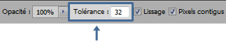
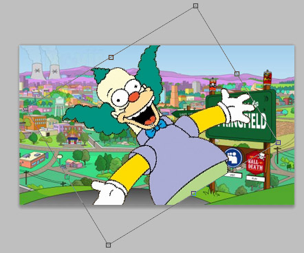

Un tutoriel général sur Photoshop qui part de zéro ? Si, si, ça existe ! D'ailleurs, vous y êtes !
Photoshop est un logiciel qu'on ne présente plus. Il est LE champion de la retouche photo, domaine pour lequel il a été conçu à l'origine, et est utilisé de manière très vaste dans l'univers de la création 2D. Qui ne s'est pas à un moment émerveillé sur des affiches publicitaires, des designs de site web particulièrement bien recherchés, des montages photos à couper le souffle... ? Photoshop y est pour quelque chose dans la grande majorité !
Chers zéros, j'ai un défi pour vous : et si c'était vous qui réalisiez tout ça ? Eh oui, à l'issue de ce tutoriel et avec de la pratique, vous serez capables de voler de vos propres ailes dans l'univers du 2D et réaliser à peu près tout ce que votre imagination est prête à livrer au monde !
J'imagine qu'en tant que débutants, vous êtes ultra-motivés et archi-pressés de faire des grandes choses tout de suite. Et vous avez raison ! Ce qu'on peut faire avec Photoshop dépasse l'entendement. Je dois toutefois vous mettre en garde : ne vous attendez pas à faire des merveilles dès le premier chapitre (d'autant que c'est un chapitre de pré-requis, vous n'iriez pas bien loin :-° ). Quand on débute dans un domaine, pas le choix, on est toujours obligé d'acquérir une certaine base avant de commencer à faire des choses vraiment intéressantes. Dites vous donc que si ce n'est pas la folie créative dès le départ, c'est tout à fait normal et que le meilleur est à venir !
On va commencer par aborder les pré-requis pour s'assurer qu'on démarre tous au même niveau. Ca serait dommage que je parle de trucs auxquels vous ne comprenez rien. :D
Au programme : ce qu'est une image, comment fonctionnent les couleurs et quelles sont les types de fichiers les plus utilisés pour enregistrer les images.
Je suis parfois allé plus loin que le strict nécessaire, juste à titre informatif. Ca peut faire beaucoup d'informations à assimiler en une fois, mais il n'est pas nécessaire de tout retenir : vous pouvez vous contenter des synthèses à la fin de chaque sous-partie.
Une image, c'est quelque chose que vous voyez à travers votre écran. Mais votre écran, c'est quoi au juste ?
Vous le savez sûrement, l'écran de votre ordinateur est composé de tout petit carrés, que l'on appelle les pixels (le nom vient d'une combinaison déformée de Picture Element). Chacun de ces pixels ne peut envoyer de la lumière que d'une seule couleur à la fois, ce qui veut dire que la précision de votre écran est limitée. En d'autres mots, si vous vous amusez à regarder de plus près (ne le faites pas hein ! C'est mauvais pour vos yeux !), vous remarquerez que tout ce que votre écran affiche est formé de petits carrés de couleur unique.
Comment est affiché le smiley ;)
Cela dit, c'est pas comme si c'était vraiment contraignant : on remarque à peine la supercherie pour peu qu'on ne colle pas son nez à l'écran. :p
Et les images dans tout ça ?
Eh bien une image, ça ne fait que définir quel pixel affiche quoi dans l'espace qu'elle occupe ! Cet espace est déterminé par ce qu'on appelle les dimensions de l'image.
Les dimensions sont conventionnellement données par l'écriture du produit longueur x largeur. Petit exemple :
La résolution
J'ai noté les dimensions en pixels, mais il est également possible de l'indiquer dans d'autres unités dans Photoshop, tels les centimètres ou les pouces.
Seulement voilà : combien de pixels y a-t-il dans un centimètre ? 10 ? 20 ? 1000 ? En fait, il faut le déterminer à l'aide de la résolution : celle-ci indique combien de pixels rentrent dans un centimètre ou dans un pouce. Par exemple, une résolution de 100 pixels/cm indique que 100 pixels rentrent dans un centimètre.
D'accord, mais pourquoi on s'encombre avec des centimètres ou des pouces alors qu'on a déjà le pixel comme unité de longueur ?
Bonne question ! En fait, le concept de résolution n'a d'importance que dans le cadre de l'impression : quand on veut imprimer une image, il est bien plus intuitif de travailler avec des centimètres qu'avec des pixels car on peut contrôler la surface de papier sur laquelle on va imprimer ! Par contre, si l'image est destinée à rester sur écran, il est clair qu'on ne va pas s'embêter avec des centimètres, les pixels conviennent très bien (ça serait d'ailleurs stupide de faire autrement, votre écran ne connaît de toute façon que ça) !
Comme on ne va travailler que sur écran dans un premier temps, on ne va pas se préoccuper de la résolution. Il fallait juste que vous sachiez de quoi il s'agit.
De l'image à l'écran
Pour qu'une image soit affichée, il suffit qu'elle envoie la couleur de chacun de ses pixels à l'écran. On peut faire ça de deux manières : soit on le dit cash (on a dans ce cas affaire à des images matricielles), soit on utilise des images vectorielles.
Les images matricielles
Il s'agit de la manière la plus intuitive d'afficher quelque chose à l'écran. Les images matricielles contiennent une grille d'information. Chaque élément de la grille représente un pixel et contient la couleur qu'il doit afficher. C'est assez simple à comprendre, je pense. :-°
Cette méthode comporte toutefois un inconvénient. Prenons cette image matricielle, par exemple :
et agrandissons-la à 600% de sa taille.
Pas beau à voir hein ? Les bords qui étaient ronds ne le sont plus vraiment : on voit que c'est formé de carrés. C'est parce que la précision de l'image est réduite à l'échelle du pixel ! En zoomant, vous agrandissez une grille de couleurs et vous finissez par voir chaque élément de la grille. Donc forcément, la qualité se détériore avec l'agrandissement. >_
Les images vectorielles
Une image vectorielle est un peu plus compliquée. Elle est créée uniquement à partir de formes, et ces formes sont définies par très peu d'informations :
Des points de passage
La manière de relier ces points (des droites ou des courbes)
La couleur contenue dans la forme
Voici donc comment on aurait pu créer l'image précédente de manière vectorielle :
Une forme vectorielle est définie par des points et la manière de relier ces points (droites ou courbes) La couleur de la forme est également incluse dans l'image.
Il n'empêche que votre écran fonctionne toujours avec des pixels ! Sur la base de ces informations, l'ordinateur génère donc lui-même une grille de pixels avant de l'envoyer à l'écran.
Mais alors ça revient à générer une grille de pixels encore une fois ! Pourquoi on s'est cassé le poum à créer deux manières d'afficher une image si c'est pour faire la même chose ?
Très bonne question ! La réponse est simple. Voici ce que donnerait un zoom de 6 fois sur l'image vectorielle :
A gauche, les composantes de l'image vectorielle adaptée à l'échelle. A droite, le résultat.
Autre chose, hein ? Les contours sont toujours nets et bien courbes ! Ceci est dû au fait que les images vectorielles ne sont pas définies au pixel près, ce sont des formes géométriques ! Votre ordinateur recalcule donc l'image à chaque zoom avant d'envoyer la grille de pixels correspondante à l'écran, ce qui fait qu'elle est nette en toute circonstance ! Puissant, non ?
Mais si c'est si puissant que ça, pourquoi on n'utilise pas toujours des images vectorielles, alors ?
Parce qu'elles sont limitées dans ce qu'elles peuvent afficher ! Les images matricielles ont l'avantage de pouvoir représenter tout et n'importe quoi, les images vectorielles ne peuvent afficher que des images construites à l'aide de formes et ne sont donc utilisées que dans des cas bien particuliers.
Au fait, saviez-vous que le texte que vous êtes en train de lire est purement vectoriel ? Oui, oui : les lettres sont bien des images vectorielles (utilisez la fonction zoom de votre navigateur si vous ne me croyez pas !). D'ailleurs vous l'avez surement déjà remarqué dans un traitement de texte : les lettres gardent une qualité impeccable quelque soit la taille de la police utilisée.
Une petite synthèse de tout ça pour finir en beauté !
Ce qu'il faut retenir de tout ça
Votre écran est composé de tout petit carrés appelés pixels.
Les dimensions d'une image s'écrivent avec la notation longueur x largeur (en pixels).
La résolution indique combien de pixels rentrent dans un centimètre (ou dans un pouce).
Les images matricielles sont des images définies au pixel près.
Elles sont utilisées partout mais ne peuvent être agrandies sans perte de précision.
Les images vectorielles sont des images définies avec des formes.
Elles contiennent des dessins plus simples, mais gardent une qualité impeccable quel que soit leur dimension.
Photoshop est avant tout un logiciel d'édition d'images matricielles. Il ne lui est pas possible d'exporter des images au format vectoriel.
Cela dit, on peut tout-à-fait créer des formes vectorielles dans Photoshop lui-même. Seulement, ça se fait de manière encapsulée : elles seront pixelisées lors de l'enregistrement de l'image finale.
Dans le monde du visuel, on a pour convention de définir un ensemble de couleurs par une combinaison de couleurs primaires. Autrement dit, une fois qu'on a ces quelques couleurs primaires, on peut représenter toutes celles de l'ensemble, ce qui est plutôt pratique.
Ça va peut-être vous surprendre, mais il existe plusieurs manières de définir une couleur ! Il y a différentes représentations et chacune possède ses propres couleurs primaires. Ces représentations sont appelées les modes colorimétriques et nous en verrons deux (on parle parfois aussi d'espace chromatique).
Le mode RVB
RVB comme Rouge-Vert-Bleu. Le mode RVB attribue à chaque pixel de votre image une intensité de chacune de ces trois couleurs, allant de 0 à 255.
Donc, quand vous avez une couleur du mode RVB, elle sera caractérisée par trois valeurs : une valeur allant de 0 à 255 pour le rouge, une autre allant de 0 à 255 pour le vert et une dernière allant de 0 à 255 pour le bleu. Quelques exemples :
Le mélange de deux couleurs primaires entre elles donne les couleurs secondaires : magenta, cyan et jaune. Le gris est une combinaison égale des trois couleurs primaires. Par exemple, R = V = B = 100 donne du gris foncé.
Sachant qu'on dispose de trois couches de couleur (Rouge, Vert, et Bleu) et qu'on peut attribuer une des 256 valeurs de chaque couche à un pixel, nous avons 2563 possibilités différentes, ce qui nous fait tout de même plus de 16,5 millions de couleurs représentables dans le mode RVB ! Avouez que c'est pas mal.
Un mode naturel !
Au fait, vous savez d'où ça sort le RVB ? :) Eh oui, le mode RVB n'est pas sorti de nulle part. Il sort directement... de votre oeil !! L'oeil humain peut percevoir la couleur à travers trois cônes : un cône sensible à la lumière rouge, un autre à la lumière verte et le dernier à la lumière bleue. Le mode RVB est donc, ni plus ni moins, le mode colorimétrique que suit la lumière !
Ca veut dire que si vous braquez un spot de lumière rouge et un spot de lumière verte au même endroit vous aurez du jaune, etc...
Mais alors ce que mon écran affiche... c'est codé en mode RVB ?
Tout à fait, puisque votre écran envoie de la lumière ! Et il n'y a pas que lui... si vous prenez une photo avec un appareil numérique, si vous scannez une image,... il s'agit de la capture de lumière et tout ça, c'est enregistré en mode RVB ! Bref, tout ça pour dire que ceux qui ont défini ce modèle de couleur ne sont pas des êtres entièrement farfelus qui ont tiré ça de leur chapeau. ^^
Oui, mais tu as dit qu'il existe plusieurs modes et donc, d'autres modes que le RVB. Ca donne quoi à l'écran alors, puisqu'il ne peut afficher que du RVB ?
Bien vu ! Au fait, si vous développez votre image dans un autre mode colorimétrique que le RVB, votre ordinateur va devoir convertir lui-même cet autre mode en RVB avant d'envoyer le résultat à l'écran.
Le saviez-vous ?
Matrice de bayer Il y a deux fois plus de capteurs verts que de capteurs rouges ou bleus.La gamme des couleurs que l'œil humain peut discerner contient davantage de vert que de bleu ou de rouge. Pourquoi ? C'est comme ça. L'œil est plus sensible au vert, la nature est ainsi faite (c'est pas pour ça que c'est ma couleur préférée, perso... :-° ) ! Au point même que lorsqu'on construit les capteurs des appareils photos numériques, on prévoit deux fois plus de place pour stocker les informations liées au vert que celles liées au bleu ou au rouge.
Autre fait anecdotique sur l'œil humain : dans les hôpitaux, en chirurgie, les médecins qui opèrent sont confrontés à voir du rouge sans arrêt, rien qu'à cause du sang du patient. Le problème est qu'à force, l'œil sature dans le rouge et n'est plus capable de discerner les nuances de cette couleur... Pas très pratique pour s'y retrouver lors d'une opération d'urgence ! C'est pour ça que tout le personnel est habillé en vert ou en bleu : cela permet de soulager les yeux en cours d'opération pour ne pas saturer. :)
Hum, je commence à vraiment m'égarer là... Allez, passons à la suite ! :pirate:
Le mode CMJ
Derrière ce mot bizarroïde se cachent Cyan, Magenta et Jaune.
Hééé ! Mais Cyan, Magenta et Jaune, ce sont les trois couleurs secondaires du RVB !
Absolument ! Et attendez, vous n'êtes pas au bout de vos surprises, ceux qui ont établi les modes colorimétriques ont bien fait leur boulot. :)
Le mode CMJ attribue à chaque pixel un pourcentage de chacune de ces couleurs. Ce n'est donc plus comme le RVB où on utilisait une valeur allant de 0 à 255 : ici, il s'agit d'un nombre entre 0 et 100. Pour obtenir du jaune pur par exemple, on a 0% de Cyan et de Magenta et 100% de Jaune (trivial :p ).
Quelques exemples de mélanges possible avec ce noble mode :
Hééé ! Les couleurs secondaires du CMJ sont les couleurs primaires du RVB !
Oui, ces deux modes sont assez complémentaires, figurez-vous. Ce qui est primaire chez l'un est secondaire chez l'autre. Moi je dis : la nature est bien faite. :soleil:
Mais à quoi cela peut bien servir de développer dans un autre mode que le RVB ? Tout simplement parce que ce mode-ci existe également dans la nature ! C'est le mode qui régit la pigmentation des objets.
Le cas de l'impression
Sachant tout ce qu'on vient de voir, si vous désirez établir une création destinée à l'impression, vous feriez mieux de le faire dans le mode CMJ, car c'est ce mode-là que vont suivre les couleurs contenues dans les imprimantes. :-°
OUI MAIS IL Y A UN MAIS !
Le CMJ, c'était de la théorie... Dans la pratique, c'est une autre paire de manche ! On a constaté que le mélange des trois couleurs primaires du CMJ ne donnait pas exactement du noir quand on imprime, mais du gris foncé à tendance faiblement bleuâtre. C'est, entre autres, dû au fait que les encres utilisées dans les imprimantes ne contiennent pas les couleurs primaires pures à 100%. On a alors rajouté la couleur noire à l'arsenal : applaudissez bien fort le mode CMJN !
Quand il s'agit d'impression, on ne considère plus que ce mode-là. Le mode CMJ est à jeter aux oubliettes. Photoshop, qui est un logiciel d'édition d'images numériques, l'a bien compris et propose le mode CMJN à la place.
Tu as dit plus haut que les appareils photos numériques enregistraient les photos dans le mode RVB. Que doit-on faire si on veut les imprimer ?
EX-CELL-ENTE question ! Vous avez déjà sûrement fait le test sans rien connaître des modes colorimétriques : il est tout-à-fait possible d'imprimer une photo sans avoir à la convertir dans le mode CMJN. La raison à cela est que la conversion est automatique. Si vous imprimez une image dans le mode RVB, votre ordinateur va donc convertir le mode avant de l'envoyer à l'imprimante.
Eh ben alors, pourquoi s'embêter avec les modes ? On n'a qu'à tout le temps développer nos images en RVB puisque l'ordinateur peut très bien faire la conversion à notre place !
Hmmm oui, certes. Seulement, c'est loin d'être une opération sans pertes ! La conversion RVB -> CMJN engendre une conversion colorimétrique car l'étendue des couleurs représentables en RVB n'est pas pareille que celle du CMJN. Enfin bref, on ne va pas rentrer dans les détails (d'ailleurs, je suis déjà allé bien assez loin pour une partie introductive :-° ). Je vous disais ça juste pour que vous sachiez un peu à quoi vous avez affaire. Si vous voulez en savoir plus, un chapitre spécialisé sur l'impression verra le jour dès le moment où vous aurez assez de connaissances Photoshopiennes pour le comprendre.
Des pixels sans couleur !
Je viens de vous faire un topo sur la manière dont on pouvait attribuer une couleur à un pixel. Mais vous devez savoir une chose : un pixel d'une image peut ne pas avoir de couleur ! Il se peut qu'il ne contienne... rien du tout ! On dira dans ce cas que le pixel est transparent. Quand une image contient des pixels transparents, ceux-ci prennent la couleur de l'arrière-plan sur lequel l'image est affichée.
Et comme la vie est bien faite, on a même droit à de la transparence partielle, qui est un pixel dont on a simplement diminué l'opacité de la couleur. On aura dans ce cas un mélange entre la couleur du pixel partiellement transparent et la couleur de l'arrière-plan sur lequel on affiche l'image.
Ca va, vous suivez toujours ? Allez, un p'tit schéma pour être certain que tout le monde ait bien compris (car j'en vois deux dans le fond qui me regardent avec des yeux grands comme ça o_O ).
1. Les pixels en-dehors du smiley sont transparents et prennent la couleur du fond sur lequel on les place. 2. On rend le smiley lui-même transparent à 50% : sa couleur se mélange avec le fond.
Bien évidemment, le mélange des couleurs est quelque chose de linéaire : plus un pixel à transparence partielle est opaque, plus sa couleur prédominera sur celle de son arrière-plan.
Ce qu'il faut retenir de tout ça
Ce qu'il faut retenir des modes colorimétriques tient en quelques lignes, en fait :
Le mode RVB attribue à chaque couleur une certaine quantité de Rouge, Vert et Bleu (allant de 0 à 255).
Le mode CMJN attribue à chaque pixel un certain pourcentage de Cyan, Magenta, Jaune et Noir.
Le mode RVB est optimisé pour les images destinées à rester derrière un écran.
Le mode CMJN est optimisé pour les images destinées à l'impression.
En plus d'avoir une couleur, les pixels d'une image peuvent être (totalement ou partiellement) transparents.
Allez, avouez, je suis certain que vous ne voyez plus les couleurs de votre machine à café de la même manière !
...
Si ? :euh:
En tout cas, si vous retenez la synthèse c'est parfait ! Il ne nous reste plus qu'à parler des extensions de fichiers et on aura fait le tour des pré-requis. :)
Bon, c'est bien de créer des images mais après il faut bien les enregistrer quelque part ! Nous allons voir ici les formats d'image les plus populaires (on ne verra ici que les formats d'image matricielles car, comme je l'ai dit, Photoshop n'exporte pas d'images au format vectoriel :) ).
Comment ça se fait qu'il y a plusieurs formats ? Il suffit d'enregistrer une grille de couleurs, il n'y a pas 36 manières de faire !
Eh bien si, en fait. >_ Si il fallait stocker cette fameuse grille telle quelle, ça prendrait pas mal de place sur le disque dur. En local ça peut encore aller mais sur le net, où la connexion est un facteur limitant, c'est plutôt inacceptable. En tout cas, moi j'aimerais pas devoir attendre 3 minutes pour l'affichage d'une image...
On a donc inventé un formidable concept : la compression. La compression permet de réduire le poids des images en fonction de leur contenu. Il y a deux types de compressions :
les compressions sans pertes peuvent compresser la taille de l'image de manière limitée mais ça se fait sans pertes d'informations.
les compressions avec pertes compressent l'image en réduisant la taille à mort, mais cela engendre une perte de données.
Pourquoi utiliser la compression avec pertes si ça désintègre les pixels ? Parce que les pertes ne se voient pas tant que ça (pour peu que vous ne compressiez pas comme un bourrin :-° ) et c'est un excellent compromis qualité/poids pour exposer des images sur le web !
Bien évidemment, on n'est pas parvenu à trouver un format d'image qui pèse une plume et qui conserve entièrement la qualité. Et c'est là tout le truc : chaque type de fichier d'image a son propre algorithme de compression. Ajoutez à cela le fait qu'on veuille parfois aussi pouvoir enregistrer des animations et de la transparence et vous vous tapez toute une panoplie d'extensions de fichiers dans lesquels vous pouvez enregistrer votre image.
Il y en a beaucoup, hein ? :diable:
Ca peut faire peur, mais vous n'en utiliserez que 2-3 à tout casser la plupart du temps. Je vais donc seulement passer les formats principaux en revue, d'autant que la plupart ne sont utilisés que dans des cas bien spécifiques. D'ailleurs, pour ne rien vous cacher, je ne les connais pas tous moi-même. Vous avez déjà entendu parler du Dicom, vous ? Moi pas, et je viens d'aller voir sur Wikipedia ; il s'agit d'un format d'image utilisé exclusivement en médecine. Décidément, on en apprend tous les jours ! :)
Les formats utilisant la compression avec pertes
Le format JPEG (extension : *.jpg)
Bon, celui-là, j'espère que vous en avez déjà au moins entendu parler. :p
Il s'agit du format d'image le plus couramment utilisé, et pour cause : il possède le meilleur rapport qualité/poids pour les photos. Donc si vous devez envoyer une photo sur le Web, prenez le JPEG par défaut, c'est le meilleur choix.
Bien sûr, il n'y a pas de miracles : la raison pour laquelle les fichiers JPEG prennent si peu d'espace sur le disque est qu'ils utilisent un algorithme de compression des données assez puissant. Et qui dit compression avec pertes dit... pertes !
Fort heureusement, dans Photoshop, il est possible de définir un facteur de qualité (nombre entier entre 0 et 12) qui contrôle l'intensité de la dégradation. Si la qualité vaut 0, la compression est énorme (le fichier prend très peu de place), mais la conservation des données est vraiment médiocre. Si en revanche, vous demandez la qualité 12 (le nec-le-plus-ultra-oui-monsieur-le-président !), les effets de dégradation seront pratiquement nuls (ou très faibles).
Pour que vous vous rendiez un peu compte de la perte des informations, je vous montre ci-dessous le résultat de l'enregistrement du smiley :) à différentes qualités JPEG :
Zoom à 700%. On remarque qu'en qualité 12, l'image est impeccablement bien représentée. Par contre, en qualité 0, c'est catastrophique au possible !
La dégradation de la qualité est plus facilement perceptible sur les images contenant peu de couleurs, comme le smiley ci-dessus ou des graphiques. C'est pour ça que le format JPEG est principalement utilisé pour les photographies car la qualité se détériore beaucoup moins sur ce genre d'images.
Mais attention, hein ! Ca ne veut pas dire que vous ne devez jamais enregistrer en JPEG autre chose que des photos ! Je dis juste que pour ces images-là, il faudra sans doute exiger une qualité supérieure lors de l'enregistrement si on veut leur laisser un bon aspect.
Bref : Le JPEG, c'est très bien. Pour des besoins de qualité, vous choisirez une qualité supérieure à 10. Pour une simple capture d'écran, même la qualité 0 peut convenir. Tout est une question de nécessité.
Les formats sans compression ou utilisant la compression sans pertes
Avouez que c'est quand-même formidable : on est parvenu à écrire moins dans un fichier tout en gardant la même quantité d'informations sur l'image ! Les formats qui compressent sans pertes sont utilisés pour des besoins de qualité impeccable.
Le format Windows Bitmap (extension : *.bmp)
Il s'agit d'un format d'image développé par Microsoft, et c'est plutôt un franc gaillard, car il ne compresse pas d'un poil ! C'est que du brut. Qualité d'image assurée, mais ça pèse lourd : une image 1280x800 a un poids d'environ 3 Mo. Ca fait assez mal, n'utilisez jamais le format Bitmap sur le net. Je vous le montre pour que vous sachiez que ça existe, c'est tout.
Par contre, il s'agit d'un format assez universel et est reconnu sur à peu près toutes les plateformes. Il peut donc très bien être utilisé en interne.
Le format GIF (Graphics Interchange Format. Extension : *.gif)
Le format GIF a trois caractéristiques principales :
Il fonctionne par couleurs indexées, ce qui veut dire qu'il ne peut y avoir que 256 couleurs différentes maximum dans une image GIF.
Il supporte la transparence, mais totale seulement.
Il peut contenir des animations.
Le système des couleurs indexées fonctionne avec une palette embarquée dans le fichier. C'est cette palette qui indique quelles sont les 256 couleurs sélectionnées. Si on a plus de 256 couleurs avant d'enregistrer ? On ramène l'image à 256 couleurs en remplaçant les couleurs en trop par leur couleur la plus proche de la palette. Exemple sur un dégradé :
A gauche l'image au format JPG, à droite l'image au format GIF. L'enregistrement au format GIF a réduit le nombre de couleurs de l'image à 256.
256 couleurs au lieu de 16,5 millions ? A quoi ça peut bien servir d'avoir un format aussi pourri ?
Mais pour les deux autres raisons, voyons ! Le format GIF supporte également la fameuse transparence dont j'ai parlé, mais totale uniquement. Ca veut dire que si on a créé une image avec de la transparence partielle dans Photoshop et qu'on l'enregistre au format GIF, tous les pixels concernés deviendront 100% opaque lors de l'enregistrement.
Mais le principal atout du format GIF réside dans le fait qu'il peut enregistrer des animations ! Par exemple, ce smiley-ci :lol: est un GIF de pure souche !
La question de l'apprenti graphiste attentif :
Dans le mode RVB, il n'y a que 256 couleurs possibles pour les images en noir et blanc. On pourrait utiliser le format GIF pour enregistrer des photos en noir et blanc puisqu'on a assez de place pour stocker toutes ces couleurs ?
Hélas, non. :'( En tout cas, ce n'est pas avantageux. Il est vrai que la qualité reste impec' pour des photos en noir et blanc, mais le JPEG est meilleur à propos du poids des images car son algorithme de compression est bien plus efficace que celui du GIF pour les photos). L'algorithme de compression du GIF sert plus pour les images simples, tels des graphiques ou des simleys.
Donc laissez ce triste sire qu'est le format GIF aux animations, il n'a pas beaucoup d'intérêt dans les autres cas.
Le format PNG (Portable Network Graphics. Extension : *.png)
Un tout bon format pour le web, sans doute le deuxième plus utilisé sur la toile. Pour l'anecdote, j'uploade toujours mes avatars ou mes icônes sur le SDZ au format PNG. Parce que si je le fait en JPEG, je ne sais pas pourquoi, mais il semble repasser par un processus d'enregistrement où le taux de compression est assez élevé (qualité clairement inférieure à 7, si vous voulez mon avis). Et ça se voit. En uploadant en PNG, la qualité n'est pas dégradable car elle est sans pertes et je conserve donc la même qualité que l'image qui est sur mon ordinateur. :)
En plus de compresser sans pertes, le PNG peut supporter n'importe quel type de transparence, totale ou partielle ! Vous pouvez donc jeter le GIF à la poubelle, il a trouvé plus fort que lui à ce niveau-là. Par contre, le PNG ne peut pas contenir d'animations.
Le format PNG est excellent pour représenter les images simples (smileys, graphiques,...), ce qui en fait le complément naturel du JPEG qui a un peu plus de mal à les compresser. Par contre, le PNG est à éviter pour les photos (que voulez-vous, on ne peut pas tout avoir !).
Cela dit, faut pas faire le puriste non plus, hein ! Pour l'image de l'allumette ci-dessus (qui est une photo), n'hésitez pas à utiliser le PNG pour conserver la transparence, tant pis si ça prend quelques kilo-octets en plus !
Ce qu'il faut retenir de tout ça
Tout ce qu'il faut retenir est dans le tableau :
Nom et extension
Support transparence
Support animations
Compression
Utilisation
JPEG (.jpg)
non
non
Avec pertes mais on peut sélectionner l'intensité de la dégradation.
Premier choix pour le web. Idéal pour les photos
PNG (.png)
oui
non
Sans pertes.
Très bon compromis pour le web. Support de la transparence parfait. A utiliser pour les images avec transparences et/ou ne contenant pas trop de couleurs.
GIF (.gif)
oui, mais totale seulement
oui
Sans pertes mais couleurs indexées (réduction à 256 couleurs au lieu de 16,5 millions).
N°3 sur la toile. Utilisé pour les images disposant de peu de couleurs et les animations.
Ca y est, vous savez tout ce qu'il y a à savoir pour commencer ce tutoriel ! On va enfin pouvoir parler Photoshop : rendez-vous dans la partie suivante.
Aaaah, excellent ! Si vous êtes là, c'est que vous n'avez pas froid aux yeux et que vous vous êtes décidés à maîtriser la bête. J'aime ça, on va bien s'entendre. :)
Je vais d'abord vous expliquer pourquoi j'ai choisi de faire ce cours sur Photoshop plutôt que sur un autre logiciel de graphisme. Tant qu'à faire, je vais également vous montrer ce qu'il a dans le ventre !
Ensuite, rien de bien dur, on se contentera de télécharger et d'installer la dernière version de Photoshop. Je terminerai par une brève présentation de l'interface, après l'installation.
Alors, pourquoi Photoshop ? C'est vrai quoi, il existe des tas d'autres logiciels de graphisme sur le marché du 2D :
The Gimp
Paint Shop Pro
Photophiltre
Paint :p
etc...
Et The Gimp est même gratuit ! De plus, vous pouvez voir de nombreuses discussions sur le net qui présentent Gimp comme le grand rival de Photoshop. Dès lors, pourquoi se servir d'un logiciel payant ?
La raison est simple : Photoshop est l'un des logiciels de graphisme 2D les plus réputés dans le monde ! Il est vraiment utilisé partout dans le professionnel (dans le domaine de la retouche photo bien sûr, mais aussi dans la pub, les créations artistiques pour les films, etc...) Photoshop est développé par la firme Adobe, que vous devez déjà sûrement connaître pour ses célèbres documents PDF et son format Flash qui fait fureur sur le net.
Mais ne vous méprenez pas : ce n'est pas parce que Photoshop est un logiciel professionnel qu'il doit vous faire peur ! Au contraire, il est archi-clair et ergonomique, et quand on a compris comment il fonctionne (ce qui sera votre cas à l'issue du tuto), le manipuler est un véritable jeu d'enfant. Bref, je peux vous assurer que sa réputation est méritée. Le seul bémol : son prix (225€ pour la version étudiante au moment où j'écris ces lignes). Vous pouvez toutefois suivre ce cours avec la version d'évaluation de 30 jours sans aucun problème.
Je ne vais pas aller plus loin dans la comparaison entre Photoshop et Gimp. Tout est une question de préférence et de budget, il n'est pas nécessaire de pousser le raisonnement au-delà (sauf si vous voulez vous lancer dans la carrière de troll). Pour les frileux, je dirais donc ceci : téléchargez la version d'évaluation de Photoshop et vous disposerez de 30 jours pour vous faire votre propre opinion. Mais je vous préviens : quand on y a touché, c'est dur de s'en séparer. :)
Que peut-on faire avec Photoshop ?
Photoshop a beau être un logiciel très puissant, ça ne veut pas dire pour autant qu'il peut tout faire. Il est avant tout un logiciel d'édition d'images matricielles (si vous avez bien suivi le chapitre des pré-requis, vous devriez le savoir :-° ). Cela ne l'empêche pas de travailler avec des images vectorielles mais ce qui est produit par le logiciel reste matriciel !
Photoshop n'est pas non plus un logiciel de modélisation 3D ! Bon, depuis un moment, il est quand-même possible de faire de la modélisation avec le logiciel mais ça reste très basique. Je ne parlerai pas donc pas de la 3D dans ce tuto, car il s'agit à mon sens d'un sujet complètement à part.
Quelques exemples de ce que peut faire la bête ? Mais en voulez-vous en voilà, mon cher !
Peinture digitale
La peinture digitale est l'art du dessin sur ordinateur et cela se fait dans presque tous les cas à l'aide d'une tablette graphique. Il n'est pas spécialement nécessaire d'être doué en dessin pour se mettre à la peinture digitale parce que de nombreux artistes se basent sur des éléments déjà existants pour réaliser leurs créations (principalement des photos).
Montages photo / Matte paintings
Vous savez tous ce que sont les montages photos : on assemble des éléments venant de plusieurs photos différentes en une seule création, on unifie le tout et ça en jette ! Ou alors vous voulez simplement rajouter des effets spéciaux pour impressionner vos amis, c'est à vous de voir.
Dans cette catégorie se retrouvent les célèbres matte paintings, ces fameux paysages d'arrière-plan que l'on peut admirer dans des films à gros budget (pour ceux-là, il se peut que certains éléments aient été créés de toute pièce par un logiciel de modélisation 3D avant d'être assemblés dans Photoshop).
Il est souvent bluffant de voir à partir de quoi les artistes sont partis. Par exemple, voici trois photos qui ont été utilisées pour la dernière image :
Dingue, hein ? Eh ouais, avec Photoshop, ça rigole pas. ^^
J'ai principalement montré des paysages, mais il est clair que si vous voulez simuler une situation où un ami se fait écraser par un sac de viande pré-machée, c'est faisable aussi hein !
La retouche photo
Les appareils photos numériques font des merveilles de nos jours, notamment les reflex (appareils avec objectifs interchangeables). Mais ils ont beau être performants, ils ne peuvent pas capturer tout ce que l'œil humain est capable de voir, ni le restituer de la meilleure manière. La retouche photo est un art qui peut aller d'un simple réchauffement des couleurs à une transformation complète, en passant par la suppression d'éléments indésirables. Tous les photographes professionnels, sans exception, retouchent leurs photos, ne serait-ce que pour faire un renforcement de contraste ou de couleurs.
La retouche photo cause parfois des polémiques car elle est également utilisée pour corriger physiquement des personnes (ça cause des problèmes de morale, et tout ça...). A cause de ça, beaucoup de personnes rejettent cette discipline à tord alors que c'est juste le contexte dans lequel elle est utilisée qui est mal vu.
La retouche photo, le montage photo et la création de matte paintings sont des catégories très liées, car elles ont beaucoup d'outils en communs.
J'admets qu'il est difficile d'apprécier la qualité du résultat sans avoir l'original à côté. Voici donc un exemple de retouche photo avant/après :
Dans le domaine de la retouche photo, on retrouve également le célèbre concept des images HDR, dont le but est de combiner plusieurs photos du même sujet avec des expositions différentes pour obtenir une plage de dynamique nettement plus étendue. Vous n'avez rien compris à cette phrase ? C'est pas grave, je ré-expliquerai tout ça depuis zéro dans le chapitre sur la création d'images HDR, pour les intéressés. :)
Comme vous pouvez le voir, ça peut donner des images très poussées mais on peut vraiment décider jusqu'où on pousse la retouche. Tout est une question de style. :)
Making-off de la première image en bonus :
Des designs de site web
Il y a des designs de site web qui peuvent être très sobres (comme Google) et d'autres qui peuvent être très élaborés (les sites de jeux video, par exemple). Certains concepteurs de design de sites web élaborés font même appel à la 3D pour étoffer leurs créations. Ça n'engage que moi, mais je trouve que tous les sites web des jeux Blizzard sont particulièrement bien foutus. :) Quelques exemples :
Des affiches, flyers, covers de CD/DVD, etc...
Le graphisme de tous les jours. On ne passe pas une journée sans tomber sur une affiche publicitaire (pour peu que vous sortiez un peu de chez vous :p ) ou sur un album de son groupe préféré. Pour créer des affiches et des flyers, Photoshop est souvent utilisé en complément avec son collègue Adobe Illustrator, qui est spécialisé dans l'édition d'images vectorielles.
Et bien d'autres choses encore, comme on dit !
Heu... Est-ce qu'on sera capable de faire tout ça à l'issue de ce tutoriel ?
Oui et non. Disons que vous aurez les connaissances techniques du logiciel pour y parvenir. Pour ce qui est de votre côté artistique, c'est à vous de développer votre art ! Ca n'arrivera pas d'un claquement de doigts. Il vous faut pratiquer, découvrir les subtilités qui feront de votre création un chef d'oeuvre, etc...
Evidemment, dans certaines images que j'ai montrées, les artistes se servent de logiciels complémentaires (pour le HDR et l'insertion d'éléments 3D ou vectoriels). Mais il s'agit d'un choix, pas une nécessité ! Vous pouvez totalement faire des matte paintings en ne vous basant que sur des photos, créer des affiches sans passer par Illustrator, etc...
Bref, avec de l'inspiration et avec beaucoup de pratique, vous serez réellement capables de produire des créations abouties comme celles montrées ci-dessus. Les seuls maîtres mots sont patience et persévérance.
Ouais ben, faut avoir un minimum de talent quand-même, non ?
Mouahahahahaaa, z'êtes un marrant vous ! :lol:
Quoi, vous êtes sérieux ?
Nom d'un chien, quel pessimisme ! Je vous conseille de consulter l'avis de Yash à ce sujet sur son tutoriel sur le dessin. Je le partage totalement et je vous invite vivement à le lire.
Vous voici arrivés à la partie ô combien passionnante du téléchargement/installation de la version d'évaluation de Photoshop ! Pour ceux qui auraient déjà acheté le logiciel avec le CD d'installation et tous les manuels qui vont avec, vous pouvez passer à la sous-partie suivante du tuto. Pour les autres, c'est ici que ça se passe. :)
Télécharger la version d'évaluation
Cliquez ici pour vous rendre sur la page de téléchargement de la version d'évaluation sur le site d'Adobe France. Il s'agit de la version CS5 Extended, c'est la plus récente.
Vous arrivez sur une page qui vous demande de sélectionner la langue et le système d'exploitation que vous utilisez. Naturellement, vous sélectionnez la version française avec Mac si vous disposez d'un Mac ou avec Windows si vous travaillez sous Windows.
Cliquez ensuite sur Télécharger maintenant, en bas de la page. Normalement, une fenêtre flash vous demandant de vous identifier devrait s'ouvrir dans la page.
Si vous n'avez pas encore de compte Adobe, pas de panique, c'est très simple à faire : vous cliquez sur Créer un compte Adobe dans la colonne de gauche et vous remplissez vite fait bien fait le formulaire d'inscription. J'imagine que vous saurez faire ça sans peine. ^^
Une fois que vous disposez d'un compte, vous pouvez vous connecter dans la colonne de droite en rentrant votre adresse électronique et le mot de passe que vous aurez choisi. C'est là qu'Adobe sort le grand jeu et vous ouvre une nouvelle fenêtre qui va gérer le téléchargement. Le côté pratique, c'est que vous pouvez interrompre et reprendre le téléchargement quand vous voulez.
Oui oui, vous avez bien vu : le fichier principal fait 1 Go ! Ca fait mal, hein ? :diable: C'est le moment de ranger votre chambre, trier les papiers qui trainent sur votre bureau, boire un café... Car télécharger Photoshop, ça prend quand même du temps ! :D
Installation du Logiciel (sous Windows)
A la fin du téléchargement, le fichier d'installation devrait s'exécuter automatiquement. Sinon, vous aurez remarqué que vous avez téléchargé deux fichiers : une archive au format 7z (ouvrable avec Winrar) et un logiciel exécutable. Il vous suffit de lancer l'exécutable pour lancer l'installation.
Je ne sais pas ce qui leur a pris chez Adobe, mais ils auraient pu faire un système d'installation traditionnel... Enfin moi, ce que j'en dis... :-°
En fait, le fichier exécutable est un assistant qui va extraire ce que contient l'archive 7z dans le dossier de votre choix (c'est sans doute pour le cas où l'utilisateur ne dispose pas de Winrar...). Donc, ça n'installe pas encore le logiciel, ça ne fait qu'extraire les fichiers de l'archive dans un dossier. Bref, ne touchez pas à l'archive, lancez le fichier exécutable, vous faites "oui, oui" à tout ce qu'il dit et vous le laissez extraire les fichiers.
A l'issue de l'extraction, rendez-vous dans le dossier dans lequel les fichiers ont été extraits (par défaut sur le bureau dans Adobe CS5\Photoshop\Adobe CS5), et lancez l'installation en double-cliquant sur le Set-up.exe. Vous vous taperez une belle phase d'initialisation qui va vérifier votre système pour commencer (prenez votre café n°2). Ensuite, vient le programme d'installation proprement dit.
Et là, ça me met dans une drôle de situation car il est possible que l'installation exige la fermeture de certains programmes, dont votre navigateur internet. Si ça arrive, je ne pourrai donc pas vous guider au fur et à mesure de l'installation, mais je suis sûr que vous ferez ça très bien, hein ? :euh: Avant de se quitter, veillez juste à trois choses :
Lors d'une étape de l'installation, il vous demande si vous voulez rentrer un numéro de série. Si vous en disposez déjà d'un, rentrez-le. Sinon, cochez la case pour évaluer le logiciel pendant 30 jours.
Préparer votre troisième café parce que l'installation est, elle aussi, assez longue.
Revenir sur ce tuto tout de suite après. ^^
Post-installation
Ouf ! Photoshop est installé. Bien sûr, comme Adobe a un sens pratique hors du commun, il ne vous a pas placé un raccourci du programme sur le bureau. Si vous voulez en créer un, rendez-vous dans le dossier dans lequel est installé Photoshop (C:\Program Files\Adobe\Adobe Photoshop CS5 par défaut) et créez le raccourci en passant par le "envoyer vers le bureau" après avoir cliqué droit sur le fichier Photoshop.exe.
Si vous ne faites qu'évaluer le logiciel, vous avez 30 jours pour obtenir un numéro de série après la première exécution de Photoshop. Précisions-le, la version d'évaluation ne contient AUCUNE restriction par rapport à la version achetée ! Vous pouvez donc profiter pleinement des capacités du logiciel pendant 30 jours :D
Ca y est, vous y êtes ! Voici à quoi ressemble la bête ! Du calme, Photoshop ne mord pas et à l'issue de ce tutoriel, vous maîtriserez son interface les doigts dans le nez. Mais comment est organisée cette interface, au fait ? Une présentation rapide s'impose !
La barre des menus
Il s'agit d'une barre des menus traditionnelle : pour ouvrir des fichiers, définir ses préférences, enregistrer, c'est là que ça se passe ! Elle permet également d'accèder à certaines fonctionalités propres à Photoshop, comme régler la taille d'une image, appliquer divers filtres, etc... Nous y reviendrons !
La barre d'outils
C'est là-dedans que ce cachent les outils que vous utiliserez. Il y a des outils pour chaque domaine :
La sélection des zones d'une image.
La dessin et la retouche photo.
Le dessin vectoriel.
La 3D et la navigation au sein du document.
La structure de la partie des concepts de base s'articulera autour de l'ordre de la liste ci-dessus. Je l'ai déjà dit, je ne parlerai pas de 3D dans ce cours. ;)
La barre des propriétés des outils
Située juste en-dessous de la barre des menus, elle indique quels paramètres vous désirez appliquer à l'outil que vous êtes en train d'utiliser. Chaque outil a ses propres paramètres. Nous y reviendrons aussi !
Le volet des fenêtres
Tout à droite, il y a un volet qui contient plusieurs fenêtres superposées. Chaque fenêtre a des fonctionnalités qui ont pour but de nous aider à travailler. On verra à quoi elles correspondent plus tard !
Réorganisons un peu ça !
La plupart des fenêtres actuellement présentes ne nous serviront pas dans l'immédiat. Alors avant de commencer, je vous propose d'y mettre un peu d'ordre. ;)
Au début de ce cours, tout tournera autour de la fenêtre en bas à droite (celle qui contient les onglets Calques, Couches et Tracés). Le reste peut être mis de côté. Pour ça, il vous suffit de cliquer avec le bouton droit sur le haut des autres groupes d'onglets et de cliquer ensuite sur "Fermer le groupe d'onglets".
Au final, on obtient donc une interface comme celle-ci qui est, mine de rien, nettement plus claire pour quelqu'un qui débute :
Cliquer pour agrandir
Voilà ! Photoshop est maintenant pleinement opérationnel et vous êtes désormais armés pour continuer la suite de ce tutoriel en toute quiétude. :)
Vous apprendrez à effectuer des opérations élémentaires sur des images, tels le redimensionnement et la rotation. Si vous êtes sages, on verra même quelques effets afin de retoucher globalement vos photos. :)
Vous apprendrez également comment créer un nouveau document Photoshop, qui est à la base de toute création.
Comme je suis plutôt fan des raccourcis claviers, j'en noterai pas mal dans ce tuto. Je ne vous dit pas qu'il faut tous les apprendre par coeur (de toute façon, ça viendra avec la pratique) mais je vous encourage vivement à utiliser ceux qui vous donnent accès aux fonctionnalités que vous utiliserez le plus, ça ne peut qu'améliorer votre productivité et votre confort d'utilisation du logiciel. :)
Je ferai une synthèse de tout le chapitre dans la conclusion.
Pour l'ouvrir dans Photoshop, allez dans le menu Fichier --> Ouvrir... (vous pouvez aussi vous servir du raccourci clavier CTRL + O). Apparaît alors l'explorateur de fichiers dans lequel vous devez parcourir pour trouver votre image. Une fois celle-ci sélectionnée, cliquez sur Ouvrir ou appuyez simplement sur la touche Enter).
Menu d'ouverture d'un fichier
L'image est désormais ouverte dans Photoshop et on peut commencer à travailler dessus. :)
L'image est ouverte dans Photoshop
Le redimensionnement
Redimensionner une image ? Pfeuh, c'est d'une facilité déconcertante.
Pour changer les dimensions d'une image, allez dans le menu Image --> Taille de l'image..., ou utilisez le raccourci Alt + Ctrl + I.
Une fenêtre apparaît.
Il ne vous reste plus qu'à changer les valeurs dans les champs Largeur et Hauteur. Cliquez sur OK et le tour est joué !
Vous remarquez qu'il y a l'icône d'un verrou qui lie la largeur et la hauteur de l'image. C'est parce que la case Conserver les proportions (en bas de la fenêtre) est cochée. Autrement dit, si vous modifiez la largeur, la hauteur se modifiera automatiquement pour conserver les proportions et vice-versa. Si vous désirez ne changer qu'une composante à la fois, il suffit de décocher la case. :)
Il vous est également possible de changer l'unité des pixels en %. Si, par exemple, vous voulez une image 4 fois plus petite, il vous suffit de demander un redimensionnement à 25% plutôt que de devoir calculer mentalement les dimensions adéquates.
Une erreur ? Annulez !
Quand vous venez de faire une opération (quelle qu'elle soit, pas seulement le redimensionnement), il vous est toujours possible de l'annuler. Pour ça, il faut aller dans Edition --> Annuler (ou utilisez le raccourci CTRL + Z. Utiliser une seconde fois ce raccourci ré-applique ce que vous venez d'annuler. Si vous voulez revenir plusieurs fois en arrière, utilisez le raccourci Ctrl + Alt + Z et pour revenir plusieurs fois en avant, utilisez Ctrl + Maj + Z)
Enregistrement et fermeture de l'image
Une fois qu'on a fini de travailler avec l'image, on peut l'enregistrer. Pour ça, rien de plus simple : Fichier --> Enregistrer Sous... (CTRL + Maj. + S). Le menu d'enregistrement apparaît et vous pouvez choisir le nom et le format de fichier dans lequel vous voulez effectuer la sauvegarde. Une fois que vos choix sont effectués, il suffit de cliquer sur le bouton Enregistrer.
Menu d'enregistrement. Comme il s'agit ici d'une photo, le format JPG est le meilleur choix.
Cliquer simplement sur Fichier --> Enregistrer (CTRL + S) enregistre l'image en remplaçant celle d'origine sans passer par la fenêtre d'enregistrement. Ne faites ça que si vous êtes sur de votre coup !
Quand vous avez fini, vous pouvez fermer l'image. Pour fermer l'image dans Photoshop : Fichier --> Fermer (CTRL + W) ou cliquez sur la petite croix à l'extrémité gauche de l'onglet de l'image ouverte, en-dessous de la barre des propriétés.
Et si on veut redimensionner en masse ?
Redimensionner une image est plutôt simple : on l'ouvre, on fait 3 clics, on change quelques chiffres et puis on sauvegarde. Vite fait, bien fait. Mais imaginons maintenant que vous voulez redimensionner 200 images (par exemple, des photos prises avec un appareil numérique que vous désirez réduire pour des questions de portabilité). C'est plutôt fastidieux d'ouvrir chaque image l'une après l'autre et d'appliquer le redimensionnement à chaque fois. En tout cas moi, après 5 photos, j'en aurais déjà marre. :D
Fort heureusement, Photoshop a créé pour nous le script Processeur d'images ! Ce script a été spécialement conçu pour traiter des images par lot. Grace à ça, on laisse Photoshop se taper tout le boulot et il suffit d'attendre qu'il ait terminé. Démonstration.
Allez dans Fichiers --> Scripts --> Processeur d'images.... La fenêtre suivante apparaît :
Comment ça marche :
Sélectionner le dossier contenant les images à redimensionner. Pour ça, vous cliquez sur le bouton Sélectionner un dossier... et il vous suffit de l'indiquer dans l'explorateur de fichiers.
Sélectionner le dossier dans lequel seront enregistrées les images modifiées. Si vous cochez Enregistrer au même emplacement, les images traitées seront placées dans un dossier JPEG qui se trouvera lui-même dans le dossier que vous avez sélectionné en
. Donc pas de confusion ou d'écrasement possible avec les photos originales !
C'est dans la définition du type de fichier qu'on va définir le redimensionnement. Cela dépend du cas naturellement, mais nous choisirons ici Enregistrer en tant que JPEG. En-dessous, il y a un indicateur de qualité. Vous savez maintenant que la qualité des fichiers JPEG peut aller de 0 à 12. A vous de choisir la qualité que vous voulez en fonction de vos besoins. Il faut également cocher la case Redimensionner et définir les dimensions des images à rétrécir.
Laissez tomber le point 4, il ne nous intéresse pas dans ce cas-ci. Il sert à appliquer d'autres actions que le redimensionnement et on n'en est pas encore là
Il suffit maintenant de cliquer sur Exécuter et vous faites tourner ! Ce que Photoshop va faire, c'est ouvrir lui-même les images une-à-une, les redimensionner selon les bornes maximales que vous avez définies et les enregistrer dans le dossier cible que vous avez indiqué. Il faut un certain temps d'exécution si vous avez beaucoup d'images à redimensionner. C'est le moment de prendre votre café traditionnel en attendant que Photoshop ait fait sa petite affaire !
Recadrer
La zone de travail
Lorsque vous ouvrez une image ou lorsque vous créez un document (ce que vous saurez faire en fin de chapitre), vous mettez en place ce qu'on appelle une zone de travail. La zone de travail, c'est l'espace dans lequel vous développez votre image. Tout ce qui est en-dehors de la zone de travail ne compte pas dans l'exportation de l'image finale.
La zone de travail est à l'intérieur des pointillés (que j'ai rajouté).
Pour l'instant on ne fait qu'ouvrir des images et les dimensions de la zone de travail étaient adaptées à celles de l'image ouverte, mais ça ne doit pas forcément être le cas ! Il faut donc bien faire la distinction, là : il y a d'une part l'image que vous avez ouverte et d'autre part ce que vous voulez montrer de cette image.
Le recadrage consiste donc à modifier la zone de travail de manière à ne montrer plus qu'une partie de l'image. C'est un peu comme si on effectuait un découpage, quoi. :)
Faire un recadrage est assez simple et intuitif (d'ailleurs, depuis quand Photoshop est compliqué, me direz-vous !). Il y a un outil entièrement dédié à ça qui s'appelle l'Outil Recadrage. Comme tout outil qui se respecte, il se trouve dans la barre d'outils à gauche dans l'interface du logiciel.
Pour sélectionner l'outil, cliquez dessus dans la barre d'outils. Vous pouvez également appuyer sur la touche C (raccourci clavier de l'outil).
Tout ce que vous avez à faire c'est déterminer la zone de recadrage, puis la valider. Pour commencer, cliquez gauche à un endroit de votre image et faites glissez la souris tout en maintenant le clic enfoncé. Lâcher le clic fixe la zone de recadrage sans la valider.
Vous pouvez ensuite ajuster cette zone si vous le souhaitez en jouant sur les petits carrés qui sont apparus.
Les carrés dans les coins permettent d'ajuster la zone aussi bien en longueur qu'en largeur. Les carrés sur les bords ne permettent d'ajuster la zone que dans le sens indiqué.
Pour valider, il suffit d'appuyer sur la touche Enter ou de cliquer sur le bouton de validation dans la barre des propriétés de l'outil, en haut à droite :
. Pour annuler l'opération, cliquez sur
juste à côté ou appuyez sur Esc.
Assez simple, non ?
Des recadrages en perspective
Il est également possible de recadrer en suivant la perspective d'un objet. Prenons un livre du zéro pour l'exemple :
Il est possible de recadrer l'image de telle sorte qu'on ait l'entièreté de la couverture dans le même plan que l'écran ! Pour commencer, traçons une zone de recadrage sans la valider.
On va jusqu'à l'étape 2 du recadrage.
Comme nous utilisons un outil, ses propriétés apparaissent dans la barre des propriétés de l'outil en haut de l'interface, juste en-dessous du menu.
Pour recadrer en perspective, veillez à ce que la case Perspec. soit cochée.
Les carrés sur les coins du rectangle ne se comportent maintenant plus comme avant. Ils peuvent être déplacés indépendamment des autres, ce qui fait qu'on peut faire coïncider la zone de recadrage avec n'importe quelle forme rectangulaire en perspective :
Une fois que c'est ajusté, vous validez. Et voilà le travail :
Ca en jette hein, avouez ! :D
Il va de soi que la qualité du résultat dépend de la profondeur de la perspective. Ici ça allait : le livre n'était pas trop de biais. Mais si ça avait été le cas, on aurait eu un étirement de pixels pas très beau à voir sur la partie droite de l'image. Cette méthode a donc ses limites.
Si vous êtes intéressés par les autres propriétés de l'outil Recadrage, rendez-vous en annexe.
La rotation et la symétrie
Vous avez pris une photo au format "portrait" et elle se retrouve au format "paysage" sur votre ordi ? Pas de soucis : il suffit d'effectuer une rotation dans Photoshop pour la redresser !
Pour effectuer une rotation sur une image, allez dans le menu Image --> Rotation de l'image. Et là vous avez le choix :
Il vous est également possible d'effectuer une rotation précise (autre que 90° et 180°, donc) en sélectionnant le menu Paramétrée.... Vous pouvez même effectuer des symétries axiales grâce aux deux derniers menus.
Vous verrez ici quelques réglages de base pour réaliser des effets plutôt sympas sur vos photos, en attendant de voir ça plus en profondeur dans le chapitre sur la retouche.
Luminosité et contraste
Pour changer la luminosité et le contraste d'une image, allez dans Image --> Réglages --> Luminosité/Contraste...
La luminosité
Pour régler la luminosité, il suffit de jouer avec le curseur fléché qui pointe sur la ligne horizontale. Si vous augmentez la luminosité (en déplaçant ce curseur vers la droite), tous les pixels de l'image auront une couleur plus claire. Si vous la diminuez, ils auront tous une couleur plus foncée (vous suivez ? :-° ).
A gauche, l'original. Au centre, l'image avec luminosité diminuée de 90 unités. A droite, l'image avec augmentation de luminosité de 80 unités.
Bon, maintenant ne me faites pas dire ce que je n'ai pas dit ! Ce n'est pas en augmentant puis diminuant la luminosité de votre image que vous allez tout faire exploser. L'espace RVB est quand-même suffisamment vaste pour qu'on puisse se permettre quelques écarts de conduite. Cet avertissement est surtout à prendre en compte si on applique des réglages à l'extrême les uns par-dessus les autres et si on fait des retouches massives.
Pour vous illustrer l'idée, voici l'image précédente qui a subi trois traitements extrêmes différents. Pour la première image, j'ai d'abord appliqué deux fois la luminosité minimum (-150 unités), puis j'ai appliqué deux fois le réglage de luminosité maximum (+150 unités). Pour la seconde image, j'ai fait pareil, mais trois fois de chaque côté. Pour la dernière, je l'ai fait quatre fois. Voici le résultat :
Sur la première image, le ciel perd déjà en qualité. Sur la seconde image, les artéfacts commencent à envahir les rochers. Sur la troisième image, c'est un désastre !
Comme vous voyez, il faut vraiment faire de la retouche avec ses pieds pour arriver à un résultat catastrophique. Mais au moins ça vous donne une idée des règles de bonne pratique à avoir en retouche photo. :)
La morale de l'histoire : Il faut éviter les extrêmes dans la retouche et essayer d'obtenir le bon réglage dès le départ, plutôt que de devoir ajuster par tâtonnements.
Le contraste
Le contraste détermine les écarts entre les couleurs les plus foncées et les couleurs les plus claires d'une photo. Une photo à faible contraste a tendance à être grisâtre et peu saturée, car les écarts entre les ombres et les lumières sont faibles. Le renforcement de contraste rend les couleurs sombres encore plus sombres et les couleurs claires encore plus claires, ce qui rend votre image plus vive. Exemple :
A gauche, l'original. Au centre, diminution du contraste de 50 unités. A droite, augmentation du contraste de 100 unités.
Un contraste élevé a tendance à attirer l'oeil grâce à la vivacité des couleurs. Mais il faut faire gaffe, c'est une arme à double tranchant : la difficulté là dedans, c'est de ne pas aller trop loin. Quand il s'agit de contraste, l'oeil en veut toujours plus et on a tendance à pousser les réglages au-delà du nécessaire. Il m'est souvent arrivé de pousser la retouche dans l'excès et de constater par après que le résultat était dégueulasse. Et ça vous arrivera aussi ! On n'a pas toujours un esprit critique objectif quand on retouche ses photos, car on est "en plein dedans".
Prenez l'habitude de revoir vos photos retouchées hors contexte (après avoir pris un bon café par exemple, pour ne pas changer des bonnes habitudes ^^ ), ça aura un effet de première impression qui sera beaucoup plus objectif.
Dans tous les cas, est-ce toujours mieux d'augmenter le contraste dans une image plutôt que de le diminuer ?
Pas nécessairement. Un faible contraste combiné avec une couleur dominante est assez fréquent dans la retouche photo. C'est un style comme un autre, à vous de choisir le vôtre. :)
Le négatif d'une couleur est la couleur qui s'en éloigne le plus. On dit alors que ces deux couleurs sont complémentaires. Une manière simple de visualiser quelles couleurs sont complémentaires est de regarder celles qui sont opposées dans le cercle chromatique :
Toutes les couleurs du RVB ne sont pas reprises dans ce cercle, mais ça donne une idée. En fait, l'ensemble des couleurs qui sont dans ce disque sont des couleurs "pures", les plus vives qui existent. On les appelle les teintes. Le noir et le blanc ne sont pas des teintes, mais bien entendu, le noir est le négatif du blanc et vice-versa.
Bref, si vous prenez par exemple le négatif d'une image dont la couleur dominante est le jaune, l'image résultante aura une dominance bleue, etc... Illustration :
Le négatif est bien sur utilisé pour créer des effets de style, mais ça nous aidera aussi à améliorer notre façon de travailler dans Photoshop. On en reparlera dans la partie avancée du cours !
A noter que le négatif n'est pas un effet destructeur : vous pouvez l'appliquer autant de fois que vous voulez sans perdre la moindre information chromatique (enfin, faut avoir que ça à faire... :) ).
Désaturation
Il est possible de transformer rapidement une image couleur en une image en noir et blanc en utilisant la désaturation : Image --> Réglages --> Désaturation (Ctrl + Maj + U).
Si ça vous intéresse de savoir comment ça marche, un morceau d'explication se trouve en annexe, après la section sur les gamut ;)
Voilà qui clôture les réglages de base. Je vais déjà m'arrêter ici, il faut bien que j'aie quelque chose à vous raconter dans les prochains chapitre. :lol:
Quand vous utilisez un logiciel de traitement de texte comme Microsoft Word et que vous voulez sauvegarder pour reprendre votre travail plus tard, tout est enregistré dans des documents .doc ou .docx. C'est la même chose avec Photoshop : il est possible d'enregistrer dans un document propre au logiciel.
Tout ce qu'on a fait jusqu'à maintenant ne nécessitait pas la création d'un document : on travaillait directement sur des images et on enregistrait tout de suite après. Mais si vous voulez réaliser une création un tant soit peu développée, vous voudrez certainement conserver tous les paramètres qui vous auront permis d'arriver au résultat et pas seulement une image brute. Ou alors vous voulez simplement démarrer à partir de rien, sans avoir à ouvrir une image. C'est là que les documents Photoshop prennent tout leur sens.
Le format des documents Photoshop est le format PSD. C'est un peu comme un format d'image : ça a des dimensions, c'est du sans pertes (encore heureux) et en plus ça inclut toutes les opérations qu'on y a effectuées. Les opérations de retouche photo dont j'ai parlé en font partie, mais il faut qu'elles ne soient pas appliquées directement sur l'image comme on a fait, on verra plus tard comment conserver ces paramètres.
Bref, le document c'est la base d'une création ! On va donc apprendre à en créer un sur mesure.
Fichier --> Nouveau...
Pour créer un nouveau document, il suffit d'aller dans le menu Fichier --> Nouveau... ou d'utiliser le raccourci CTRL + N. Une fenêtre apparaît.
Comment ça marche :
Nom : Nom de votre document. Lorsque vous effectuerez un enregistrement, Photoshop suggérera ce que vous avez mis là-dedans comme nom de fichier.
Paramètre prédéfini et Taille : sert à sélectionner des formats prédéfinis. Par exemple, vous pouvez sélectionner "Papier International" comme paramètre et "A4" comme taille. Photoshop vous génèrera alors automatiquement un document avec les paramètres correspondant aux dimensions d'une feuille A4 avec haute résolution. On va faire simple, laissez toujours Personnalisé pour le moment.
Largeur et Hauteur : dimensions de la création. Vous pouvez la définir en pixels, centimètres, pouces, etc... Pour l'instant, on ne va travailler qu'avec des pixels !
Résolution : Densité de pixels par unité de longueur. Elle s'exprime en px/pouce ou en px/cm. Ca ne sert que si vous définissez d'autres unités que le pixel quand vous définissez les dimensions du document.
Mode : RVB pour les images qui restent sur écran et CMJN pour les images qui seront imprimées. On va toujours bosser en RVB pour commencer et dans tous les cas, laissez 8 bits.
Contenu de l'arrière-plan : Décidez avec quelle couleur sera remplie votre image lors de la création du document. Personnellement, je laisse toujours Blanc
Une fois que vous avez défini les paramètres qui vous conviennent, il vous suffit de cliquer sur OK.
Un nouveau document a été créé
Voilà ! Vous êtes maintenant parés pour créer un nouveau document totalement personnalisé selon vos souhaits ! Y a de quoi frimer. :soleil: Bon, j'avoue, créer un simple document totalement vierge n'est pas très excitant, mais il faut bien commencer quelque part...
Une petite synthèse des accès aux menus et leur raccourci :
Les opérations de fichiers
Pour créer un document : Fichier --> Nouveau (CTRL + N)
Pour ouvrir un document : Fichier --> Ouvrir (CTRL + O)
Pour fermer un document : Fichier --> Fermer (CTRL + W)
Pour enregistrer un document : Fichier --> Enregistrer Sous... (CTRL + Maj. + S). Cliquer simplement sur Enregistrer (CTRL + S) écrase la précédente version du document, si vous l'aviez déjà enregistré auparavant ou si il s'agit d'une image ouverte.
Annuler un effet : Edition --> Annuler (Ctrl + Z). Pour effectuer plusieurs annulations de suite : Aller Vers l'arrière (Ctrl + Alt + Z). Pour revenir en avant : Aller Vers l'avant (Ctrl + Maj + Z).
Les opérations sur les images
Outil recadrage :
(C)
Redimensionner une image : Image --> Taille de l'image... (Alt + Ctrl + I)
Redimensionner en masse : Fichier --> Scripts --> Processeur d'images... (pas de raccourci par défaut)
Luminosité/Contraste : Image --> Réglages --> Luminosité/Contraste... (pas de raccourci par défaut)
Dans ce chapitre, nous allons aborder les outils qui sont propres au dessin et tout ce qui touche à la création à partir de rien !
Vous ne comptez pas vous lancer dans le dessin numérique, vous préférez les montages photo ou les designs de site web ? Mais cher ami(e?), ce que nous voyons ici est indispensable pour tout ça également ! Ça ne saute peut-être pas aux yeux pour ceux qui débutent, mais je peux vous assurer que ce chapitre ne sera pas du temps perdu, loin de là. :)
La première chose à faire quand on s'apprête à dessiner, c'est spécifier la couleur qu'on compte utiliser. L'endroit où vous spécifiez vos couleurs se trouve tout en bas de la barre d'outils : il s'agit des deux grands carrés superposés. Dans le carré supérieur, on choisit ce qu'on appelle la couleur de premier plan, dans l'autre on choisit la couleur d'arrière-plan.
Pour choisir une couleur, il suffit de cliquer sur un des deux carrés. Lequel ? Disons le supérieur, celui de la couleur de premier plan :) Une fenêtre apparaît dans laquelle vous pouvez effectuer le choix de la couleur :
Sélectionner une couleur est assez simple : on choisit une teinte dans le rectangle de droite puis on sélectionne la couleur souhaitée dans le carré de gauche. Notez que vous pouvez aussi jouer au geek et rentrer les coordonnées RVB pour obtenir la couleur souhaitée. :soleil:
Quand vous avez choisi, cliquez sur OK et c'est dans la boîte ! Le carré représentant la couleur de premier plan prend alors la couleur choisie.
Quelques trucs utiles à savoir
(Pour que ça ne soit pas trop lourd, on va dire que C1 est la couleur de premier plan et C2 est la couleur d'arrière-plan.)
Quand on veut dessiner quelque chose, c'est la C1 qui est utilisée.
Si vous recadrez une image au-delà de sa taille, les nouveaux pixels prendront la couleur C2.
Le raccourci D : la C1 devient le noir et la C2 devient le blanc.
Le raccourci X échange la C1 avec la C2
Voilà voilà, essayez de mémoriser les raccourcis claviers car ça vous servira sans arrêt. :)
Le remplissage
Commençons par le tout début : on va remplir l'entièreté de votre image d'une même couleur ! Pour réaliser ça, il vous faut vous servir de l'outil Pot de Peinture.
Par défaut, cet outil n'est pas directement visible dans la barre d'outil, on voit l'icone de l'outil dégradé à la place. C'est parce que ces deux outils font en fait partie d'un même groupe d'outils (c'est pour ça qu'il y a une petite flèche à côté de l'icône du dégradé)
Pour sélectionner l'outil pot de peinture, il vous faut donc cliquer sur l'outil dégradé et maintenir le clic. Un volet apparaît avec les outils disponibles dans le groupe. Sélectionnez l'outil Pot de peinture en relâchant le clic sur son onglet.
Ta-dam ! Vous voilà en possession de la bête ! :ninja:
Créez donc un document et amusez-vous : il suffit de sélectionner une couleur de premier plan, cliquer quelque part sur votre zone de travail et elle se remplit avec cette couleur-là.
Remplissage d'une image blanche avec ceci : comme sélection de couleur
On peut également réaliser un remplissage à l'aide des raccourcis clavier. Personnellement, j'utilise toujours ça, c'est 34 fois plus rapide que l'utilisation de outil (montre en main :-° )
Le raccourci Alt + Retour remplit la zone de travail avec la couleur de premier plan.
Le raccourci Ctrl + Retour remplit la zone de travail avec la couleur d'arrière-plan.
Et hop, c'est dans la poche !
Evidemment, l'outil Pot de peinture ne sert pas qu'à faire des remplissages qui prennent toute l'image. Il y a d'ailleurs pas mal de fonctionnalités dans la barre des propriétés. On ne va s'intéresser qu'à la tolérance dans ce chapitre (pour les autres, vous irez voir en annexe).
La tolérance

Le remplissage peut être sélectif en fonction de la tolérance, qui est un nombre exprimé entre 0 et 255.
Entre 0 et 255, tiens donc ! Comme pour la représentation RVB ?
Oui, tout-à-fait ! Au fait, c'est de là que ça vient ! Pour rappel, chaque couleur du mode RVB est définie par une combinaison des trois couleurs primaires (rouge, vert et bleu). En donnant un nombre de 0 à 255 à chacune d'elles, on peut représenter n'importe quelle couleur de l'ensemble RVB. Par exemple, le jaune pur est représenté par le code Rouge = 255, Vert = 255 et Bleu = 0.
La tolérance détermine donc de combien d'unités on peut s'éloigner de la couleur sur laquelle on a cliqué ! Par exemple, si on donne une tolérance 10, seuls les pixels aux alentours du clic ayant un code RVB qui diffère d'au plus de 10 unités dans chacune des composantes seront remplis.
... Quoi, comment ça " o_O " ?
Bon allez, un exemple ! Imaginons que je veuille remplir le ciel en bleu sur sur cette image :
Voici ce que donne un remplissage pour différentes tolérances quand je clique sur un pixel rouge, en haut à gauche :
Valeur de la tolérance, de gauche à droite : 4, 32, 81, 128 Quand la valeur est faible, l'ensemble des couleurs qu'on est autorisé à remplir est très restrictif : seuls les pixels ayant une couleur très proche du rouge sélectionné seront changés. Par contre, si la tolérance est trop élevée, on atteint des couleurs qui sont très éloignées de la couleur d'origine dans l'espace RVB.
La morale de l'histoire est que vous ne pouvez pas espérer changer tout en un clic avec ce système de tolérance : la lumière ambiante est rouge et affecte la couleur des pixels de l'avion, ce qui fait qu'il seront sélectionnés de manière indésirable si vous définissez une tolérance trop élevée. En plus, une partie du ciel est bleu-gris. Soyez donc très prudents et procédez par à-coups, en plusieurs clics avec des tolérances à chaque fois différentes. Il n'y a que comme ça que vous aurez un résultat correct avec cette méthode.
Avant d'apprendre à utiliser les outils de dessin, on va étudier un type de remplissage pas banal : les dégradés.
Créer des dégradés
Un dégradé de couleur, c'est un passage progressif d'une couleur vers une autre. Pour en réaliser un, il faut sélectionner l'outil Dégradé dans la barre d'outils.
(ou appuyez sur la touche G)
Le dégradé se fera entre vos couleurs de premier plan et d'arrière-plan. Une fois que vous les avez choisies, vous cliquez sur la zone de travail, vous faites glisser, vous relâchez le clic, et hop :
Dégradé réalisé avec la paire de couleurs suivante : Clic de la gauche vers la droite : on commence avec la couleur de premier plan et on termine avec celle d'arrière-plan.
Le dégradé de couleur se fait entre les deux clics. Tout ce qui précède le premier clic sera rempli de la couleur de premier plan et ce qui suit le lâchement du clic aura la couleur d'arrière-plan. Pour résumer schématiquement (avec C1 la couleur de premier plan et C2 la couleur d'arrière-plan) :
L'étalement du dégradé dépend donc du trait que vous déterminez lors du clic-déplacement de la souris.
De toutes les formes et de toutes les couleurs !
Les dégradés ne se limitent pas à une simple transition rectiligne d'une couleur à l'autre ! Ils peuvent être bien plus paramétrés que ça.
Par exemple, si vous allez dans la barre des propriétés de l'outil, vous remarquerez qu'il y a une série de petites icônes :
Chacune de ces icônes représente la manière dont sera effectué le dégradé. Actuellement, la première est sélectionnée : il s'agit du dégradé linéaire, ce qui veut dire que la transition entre vos deux couleurs se fait le long d'une ligne droite. Si vous sélectionnez les autres, vous obtiendrez des dégradés de types différents.
Le dégradé radial
Le dégradé radial effectue une transition circulaire. Le clic gauche détermine le centre de la transition radiale.
Application d'un dégradé radial du gris clair vers le gris moyen.
Le dégradé incliné
Le dégradé incliné effectue une variation comme si l'étalement était tracé par les aiguilles d'une montre. Une fois encore, le clic gauche détermine le centre. Le sens dans lequel vous déplacez votre souris indique le point de départ.
Dégradé incliné du noir vers le blanc.
Le dégradé réfléchi
Un dégradé réfléchi est un dégradé linéaire face à un miroir : quand on effectue le dégradé, il part dans les deux sens.
Dégradé réfléchi du bleu clair vers le bleu foncé.
Le dégradé en losange
Le dégradé en losange dessine une sorte de losange-étoile avec la couleur de premier plan et rempli le reste avec la couleur d'arrière-plan. Qui a dit "bizarre" ?
Dégradé en losange du blanc vers le noir.
Et en plus de tous ces modes, vous pouvez ne pas vous limiter à deux couleurs dans votre dégradé : il est possible de contrôler toute la transition d'une couleur à l'autre. Voir tout ça ici serait un peu lourd mais si vous voulez en savoir plus, rendez-vous dans la section de appropriée de l'annexe.
Bon entre nous, franchement, une image remplie d'un dégradé, ça intéresse qui ? Pas grand monde, on est bien d'accord ! Mais ça fait partie des trucs que vous devez savoir, car ça peut être utile à exploiter plus tard (vous me remercierez un jour :D ).
En tout cas maintenant, fini de rire ! Il est temps de commencer à faire du graphisme, là. Sortez vos pinceaux, ça va saigneeer ! :pirate:
Cette fois-ci, on va apprendre en réalisant un TP en parallèle. Le sujet : réaliser un nuage basique, plus ou moins réaliste !
Bon, vous le ferez peut-être mieux que moi si ça se trouve, la création à partir de rien n'est pas vraiment mon fort. :p
A vos pinceaux !
Commencez par me créer un document Photoshop (de taille 500x250, par exemple) et remplissez-le d'un bleu clair. En ce qui me concerne, le bleu ayant pour code hexadécimal 8EA6EA. Pour rappel, Alt + Retour remplit l'image de la couleur de premier plan.
La première chose à faire après avoir fait ça, c'est dessiner un support sur lequel on pourra se baser pour étoffer notre nuage. Démarrer à partir d'un support est une règle générale pour toute création en dessin numérique, d'ailleurs !
L'outil de base pour dessiner dans Photoshop, c'est l'outil Pinceau. Sélectionnez-le dans la barre d'outil.
Celui qui trouve le raccourci clavier associé gagne un point !
Quand l'outil est sélectionné, le curseur prend l'apparence d'un cercle. Il s'agit de la forme de votre pinceau : quand vous dessinez, la forme s'applique sur l'image avec la couleur de premier plan.
Vous pouvez éditer la forme de votre pinceau en cliquant avec le bouton droit sur la zone de travail ou en cliquant sur la petite flèche à côté de la forme dans la barre des propriétés (
). Dans les deux cas, une mini-fenêtre apparaît :
Menu pour la sélection de formes prédéfinies.
Vous voyez la liste en bas ? Ce sont toutes les formes de pinceaux prédéfinies. Eh oui, vous pouvez ne pas vous limiter à un rond en guise de forme de pinceau ! Vous pouvez même prendre tout et n'importe quoi, c'est un des avantages diaboliques du dessin numérique ! Mouahahahahaaaaa ! :diable:
Mais n'allons pas trop vite en besogne. Gardez la forme ronde pour le moment, on verra les autres plus tard.
La forme du pinceau actuellement sélectionnée est donc un rond et vous remarquez que vous pouvez éditer deux caractéristiques en haut de la mini-fenêtre : son épaisseur (diamètre du cercle) et sa dureté. La dureté détermine le fondu du contour : si elle est définie à 0%, les contours du rond seront hyper flous lorsque vous appliquerez votre pinceau. A l'inverse, si elle est définie à 100%, les contours seront bien nets. :)
Illustration de la dureté. A gauche : on peint avec un pinceau à dureté 0%. Au milieu : on peint avec un pinceau à dureté 50%. A droite : on peint avec un pinceau à dureté 100%.
Dessiner la base
On va maintenant créer la forme basique de notre nuage (avec des contours nets) que nous étofferons par après.
Prenez donc une dureté 100% (pour avoir des contours nets), une taille arbitraire (genre 60px) et appuyez deux fois sur Enter pour valider vos choix. Prenez ensuite un gris clair comme couleur de premier plan (genreDADADA) et c'est parti ! Pour peindre, il suffit de cliquer gauche quelque part sur la zone de travail et de bouger la souris. Relâcher le clic retire le pinceau. Facile, hein ?
N'hésitez pas à n'effectuer qu'un clic, puis changer l'épaisseur du pinceau, puis ré-effectuer un clic à côté, etc... Votre nuage sera ainsi formé de plein de boules de taille différentes, ce qui est plus réaliste que si vous gardiez la même forme de pinceau pour tout le dessin. :)
Fondre le nuage : utiliser l'opacité et la dureté
Il est également possible de modifier l'opacité de votre pinceau. Cela aura pour effet de mélanger la couleur du pinceau avec celle déjà présente sur la création. C'est vraiment intéressant car cela permet d'atteindre des subtilités et des détails qu'il n'est clairement pas possible d'avoir avec un pinceau totalement opaque ! Vous comprendrez ça dans une minute. :)
Changer l'opacité de votre pinceau se passe dans la barre d'outils. Mettez-la à 30% pour commencer :
. La couleur de premier plan que vous utiliserez pour peindre sera donc appliquée avec une opacité maximale de 30% lors d'une application de pinceau.
Avec un gris un peu plus clair que celui du support (F3F3F3), utilisez un pinceau de taille assez petite (15 px, que vous variez un peu en cours de peinture) avec dureté 0% (pour assurer un fondu agréable entre le nuage et le ciel). Peignez sur le bord supérieur du nuage, en effectuant des petits mouvements de vague avec votre souris pour donner un effet un peu aléatoire :
La couleur de premier plan est appliquée à une opacité de 30% en haut du nuage.
Mais ?! C'est nul ce truc !
Mais nooooooooooon ! Evidemment, il faut passer plusieurs fois par dessus pour avoir un résultat qui a de la gueule ! Comme vous passerez à plusieurs reprises au même endroit tout en suivant des chemins légèrement différents, vous obtiendrez au final quelque chose d'opaque avec un fondu bien subtil entre le nuage et le ciel :
Bon, ce n'est pas encore fini mais vous pouvez déjà remarquer que combiner opacité et dureté, c'est quelque chose d'assez puissant ! N'oubliez pas de varier la taille en cours de dessin, il n'en sera que plus réaliste !
Maintenant, il est temps de donner un peu de variation au sein de ce nuage ! Avec une opacité de 15% donc, prenez un gris foncé (pourquoi pas 797979 ?) et peignez à l'intérieur du nuage pour avoir une sorte de relief. Toujours dans la même optique, faites des petites vaguelettes en dessinant afin d'avoir des formes assez aléatoires. Si vous vous rendez-compte que ça foire, rien ne vous empêche de prendre à nouveau un gris clair en couleur de premier-plan et de repasser par-dessus vos boulettes. J'ai parfois même utilisé du blanc pur (FFFFFF) pour accentuer les reflets.
Ca peut demander un peu de temps et de pratique avant d'arriver à un résultat convainquant, ne baissez pas les bras trop vite. :)
Il ne reste plus qu'à achever le travail en unifiant le bas du nuage avec le ciel. J'utilise une couleur entre le gris foncé et le bleu du ciel. C'est facile à faire : lorsque je suis dans la fenêtre du choix de couleur de premier plan, j'ai la possibilité de cliquer sur un pixel de la zone de travail pour en prélever sa couleur ! A partir de là, je déplace un peu la couleur vers le gris et c'est dans la boîte.
Il ne vous reste plus qu'à recadrer un peu et voilà le travail !
Je ne sais pas si vous vous en rendez-compte, mais ce qu'on vient de voir constitue la base de toutes les peintures digitales ! Vous pouvez vraiment aller très loin avec ça, ça ne vous limite pas à faire uniquement des nuages. A vous à faire parler votre imagination et à suivre les tutoriels sur le sujet proposés sur le net. :)
Bon bien sur, faut pas se voiler la face : arriver à des bons résultats demande beaucoup de pratique. Mais n'est-ce pas le cas pour toutes les disciplines ?
C'est tout ?
Non ! On l'a vu, on peut choisir la forme du pinceau dans le menu de la sélection des formes prédéfinies (là où on a choisi la taille et la dureté du pinceau). Il vous suffit d'en sélectionner une dans la liste pour la définir comme forme à son tour.
Les 10 formes qui suivent les formes circulaires sont issues de vrais pinceaux, afin d'améliorer le réalisme des dessins. Les autres sont diverses et variées, vous pouvez vous amuser à les essayer si vous voulez. Mais la vraie force de ce menu, c'est qu'il est possible de charger des formes prédéfinies trouvées sur le net !
Lorsqu'on effectue une recherche de formes de pinceau sur le net, on utilise le terme "brushes", qui signifie "brosses" (formes de pinceau) en anglais. Il existe des tas de sites qui proposent des brushes gratuitement (DeviantART, pour ne citer que lui...).
Après avoir téléchargé un pack de brushes sur le net (parce qu'on télécharge généralement toujours les brushes par groupes, contenus dans un seul fichier .abr), il faut l'importer dans Photoshop en les chargeant :
Une fois chargés, il se trouvent en fin de liste dans les formes prédéfinies et on est libre de dessiner avec ! Généralement, pour ces brushes-là, il n'est pas possible de sélectionner la dureté.
Quelques exemples de créations réalisées à l'aide de brushes plutôt exotiques :
Donc, vous voyez qu'il y a clairement moyen de jouer dans la créativité, là !
Mais comment est-ce que ces formes ont été fabriquées ?
Généralement, elles sont soit créées de toute pièce soit créées à partir de photos. Dans tous les cas, le net regorge de formes de pinceau mises à notre disposition et il serait dommage de ne pas en profiter. :)
La création à partir de rien n'a déjà presque plus de secrets pour vous ! Pour plus d'infos sur les propriétés de l'outil pinceau, rendez-vous dans l'annexe.
J'espère que vous êtes motivés : on va voir le concept le plus puissant que nous offrent les logiciels de dessin numérique ! Tout au long de ce chapitre je vais me baser sur l'exemple du dessin, mais il est clair que l'utilisation des calques est un concept général qui vous accompagnera partout.
Les calques permettent de travailler de manière indépendante sur une création. Je n'en dit pas plus, vous vous rendrez-compte de la magie de ce truc très bientôt. :magicien:
La meilleure manière d'expliquer le concept des calques est sans doute de vous en faire ressentir le besoin. Nous allons donc démarrer avec un exemple.
Vous connaissez Matt Groening ? Meuh si, allez ! Il s'agit du dessinateur et créateur de la série les Simpson. Eh bien on va se mettre à sa place un petit moment. :)
Un beau matin Matt se lève. "Quelle belle journée pour dessiner", se dit-il ! Étant adepte du dessin à l'ancienne, il prend une feuille de papier, quelques crayons de couleurs et dessine la célèbrissime ville de Springfield :
Seulement voilà, Matt se dit que c'est un peu vide. Ça serait quand même bien mieux si il y avait également un personnage sur cette image. Dans la folie de l'action, il dessine notre très cher ami Krusty le clown sans trop réfléchir à sa position sur le dessin.
Notre dessinateur est très satisfait ! Il a bien mérité son café traditionnel. Il va donc à la cuisine s'en faire un et retourne voir son dessin. Et là il se dit qu'il y a un truc qui cloche : il se rend compte qu'il aurait mieux fait de dessiner Krusty plus à gauche car sa main masque les panneaux sous la pancarte !
Coup dur pour Matt ! C'est un désastre : il est bon pour tout recommencer ! Bon, vous allez me dire que ce n'est pas si grave, que personne n'y fera attention... Mais il se trouve que notre cher ami est un perfectionniste ! Il ne supporte pas la moindre erreur. Un peu déprimé, il prend une nouvelle feuille de papier et recommence péniblement son dessin. Ah, si seulement il était possible de déplacer ce cher Krusty d'un coup de baguette magique...
Je vais vous en annoncer une bien bonne : avec les calques, c'est possible ! Ceux-ci vous permettent de garder les éléments d'une création séparés, ce qui vous autorise à déplacer votre personnage en un clic sans affecter l'arrière-plan. Et ça, c'est très fort. :)
Comment ça fonctionne ? Vous avez l'explication juste en-dessous !
Définition et Représentation
Le concept des calques est assez intuitif. Un calque, c'est une couche sur laquelle vous dessinez. C'est comme si vous dessiniez sur une feuille de papier : ce qui est déjà présent sur la feuille est remplacé par ce que vous êtes en train de dessiner par-dessus.
Mais alors la feuille de papier de Matt Groening, c'est un calque ?!
Oui, et c'est là le problème : on n'a qu'un seul calque ! Le concept des calques prend tout son intérêt à partir du moment où ils sont plusieurs.
En haut : sur un seul calque. En bas : personnage sur un calque séparé.La meilleure manière de se représenter un ensemble de calques est de le comparer à un ensemble de vitres superposées. Imaginez qu'au lieu de sa feuille de papier, Matt dispose de deux vitres parfaitement transparentes. Sur l'une d'elles, il dessine la ville de Springfield.
Maintenant il a le choix : il peut soit dessiner Krusty sur cette même vitre (et donc, sur ce même calque), soit placer l'autre vitre par-dessus la première et dessiner dessus. Cette deuxième possibilité fait donc intervenir deux calques tandis que la première n'en fait intervenir qu'un seul. Ces deux situations sont représentées sur l'image ci-contre.
Dans son cas, il vaut mieux utiliser la seconde solution. Pourquoi ? Parce que si on veut déplacer le personnage ultérieurement, il suffira de déplacer la vitre qui le contient et le tour est joué ! Dans le premier cas (avec un seul calque), ce n'est pas possible : comme Krusty a été dessiné sur le même calque que celui du paysage, il ne peut être considéré comme un élément indépendant.
En résumé, ce que Matt Groening aurait du faire, c'est dessiner d'une part la ville sur un calque (qu'on nommera Springfield) et dessiner le personnage sur un autre calque (Krusty), complètement séparé du premier. Ce qu'on dessine sur le calque Krusty ne regarde que le calque Krusty et le calque Springfield n'est pas concerné dans l'histoire. Par conséquent, le personnage que nous peignons est séparé de l'image d'arrière-plan et nous pouvons le déplacer à notre guise.
Je ne comprends pas trop... Si on dessine sur un autre calque, ça veut dire qu'on dessine ailleurs, dans un autre document ?
Non, non, absolument pas ! Tout se passe dans le même document. Les calques servent juste à séparer les éléments. En fait, ce qu'il faut retenir de tout ça se résume deux phrases :
Les calques permettent de garder les éléments d'une même création indépendants. L'indépendance entre les éléments permet de travailler séparément sur ces éléments sans affecter ceux situés sur les autres calques.
D'ailleurs, si on vous mettait une image sous le nez, il vous serait impossible de dire si elle a été créée avec un ou plusieurs calques. Ce n'est pas quelque chose qui se voit, c'est juste un concept qui nous facilite grandement la vie quand on travaille dans le graphisme ;)
Allez, il est temps de voir ce que ça donne concrètement dans Photoshop !
Ce que ça donne dans Photoshop : les notions théoriques
Avant d'aborder la partie pratique, il est important de comprendre certaines conventions que Photoshop utilise pour représenter les calques. En voici deux :
Un calque est transparent par défaut.
Un calque a des dimensions indépendantes de la zone de travail.
Je vais passer en revue chacun de ces deux points :)
Un calque est transparent par défaut
Difficile de faire plus clair : quand on crée un calque (lorsqu'on ajoute une vitre), il ne contient rien à la base (rien n'est dessiné sur la vitre). Et "ne rien contenir", pour Photoshop, ça veut dire "ne pas avoir de couleur" : les pixels attribués au nouveau calque sont donc transparents.
Mais l'écran est bien obligé d'afficher quelque chose ! Si un pixel est transparent, comment Photoshop parvient-il à nous le faire comprendre ?
Vous alors, vous avez un esprit vif, j'aime ça ! Vous pensez surement à ce qui se passerait si je retirais le calque Springfield de la création :
Il est clair que lorsque le calque Springfield était présent, les pixels transparents sur le calque Krusty laissaient entrevoir le paysage du calque inférieur, au même titre qu'on voit à travers une vitre parfaitement transparente. Mais si on venait à retirer le calque Springfield, que laisseraient entrevoir les pixels transparents du calque Krusty étant donné qu'il n'y a plus rien à afficher en-dessous ?
Eh bien vous allez le découvrir par vous-même : créez-moi un document Photoshop avec pour Contenu de l'arrière-plan défini sur Transparent.
Badaboum, nous y voilà :
Hein ? C'est ça que Photoshop affiche pour montrer que c'est transparent ?
Affirmatif ! C'est bizarre, hein ? :p Il s'agit d'une convention pour désigner les pixels transparents d'une image : une grille alternée de carrés blancs et gris. Mais je vous rassure tout de suite : cette grille est là pour vous montrer dans Photoshop que de la transparence est présente, mais JAMAIS elle n'apparaîtra sur votre image finale (même si vous l'enregistrez au format PNG et GIF qui sont les formats supportant la transparence. Pour ce qui est des autres formats, la transparence est remplacée par du blanc).
Notez aussi que cette grille n'apparaît pas si il y a quelque chose à afficher sous la transparence : si le calque Springfield était là, on n'aurait pas cette grille qui viendrait nous embêter (encore heureux !). Par contre, si ce calque est retiré :
La transparence est indiquée par une grille de carrés blancs et gris.
La taille d'un calque dépend de ce qu'il contient.
Pour Photoshop, les calques n'ont pas les mêmes dimensions que votre zone de travail. En fait, ils ont même une taille variable ! La taille d'un calque est définie par le rectangle dans lequel s'inscrit ce qu'il contient. Ca sera plus clair avec un dessin, je crois ^^
La taille du calque Krusty est définie par le rectangle bleu. Celle du calque Springfield est déterminée par le rectangle rouge.
Cette propriété fait que le contenu des calques peut se trouver en-dehors de la zone de travail ! Imaginons que je veuille caser Homer Simpson dans le dessin, et que la hauteur du calque qui contient Homer est supérieure à la hauteur de la zone de travail. Homer ne pouvant pas être entièrement contenu dans cette zone, il est obligé de déborder en-dehors. Résultat, on a un calque tronqué.
En réalité, si on ne dit pas explicitement à Photoshop qu'on tronque l'image, ce qui se passe est ceci :
Les pixels débordant de l'espace de travail existent toujours ! La morale de l'histoire est que si l'image est trop grande pour être contenue dans la zone de travail, seuls les pixels contenus dans cette fameuse zone apparaissent dans la création. Néanmoins, le reste qui déborde existe toujours et il est possible de le ramener dans la création soit par déplacement, soit par rétrécissement de l'image, etc... Bref, tout ça pour dire que ce n'est pas perdu !
Voilà, c'est tout ce que j'avais à dire pour la théorie.
Ca va, vous êtes toujours là ? :euh: Y a intérêt ! Allez, il est temps de passer à la pratique.
Histoire de vous faire gagner du temps, je vous offre gracieusement le document PSD sur lequel on va travailler.
Ce document contient la fameuse image d'exemple dont je me sers depuis le début. Vous devriez donc tomber nez-à-nez avec ceci :
Avant de commencer et si ce n'est déjà fait, il vous faut déployer l'onglet "Calques" dans le volet des fenêtres en haut à droite. Pour cela, il vous suffit simplement de double-cliquer dessus.
Déploiement de l'onglet Calques
Cet onglet répertorie tous les calques présents dans le document. Dans notre contexte, on en a trois : Quimbi, Krusty et Springfield. Vous remarquerez qu'il n'y a pas l'icone de l'oeil dans la case à côté du calque Quimbi. Ca veut simplement dire que ce calque existe mais n'est pas affiché sur la création (c'est un peu comme si on faisait disparaître la vitre, mais elle est toujours là !). On s'occupera donc de Quimbi plus tard :)
Au passage, vous pouvez cliquer sur l'œil à côté du calque Springfield pour le faire disparaître et remarquer la zolie grille de transparence dont je vous ai parlé tout à l'heure (pour le faire réapparaître, il suffit de re-cliquer sur le carré).
L'ordre dans lequel sont listés les calques est important. Pour en revenir à notre comparaison, c'est l'ordre dans lequel vous placez vos vitres. Si on se limite aux deux calques visibles de la création :
A gauche, l'ordre des calques dans la fenêtre des calques. Au milieu, vue schématique de la situation. A droite, le résultat.
J'imagine que c'est assez clair : si le calque Krusty est en-dessous du calque Springfield dans la liste, le personnage disparait de la création car le paysage le masque. Si il y avait eu des zones transparentes sur le calque Springfield, on aurait pu voir à travers ces zones ce qui se cachait sur le calque inférieur (mais ça, j'imagine que vous l'avez compris à force :p ).
Déplacer le personnage
Il est temps d'exploiter le concept des calques : comme votre personnage est sur un autre calque que la ville, on peut le déplacer indépendamment de celle-ci. On va se servir de l'outil déplacement (le premier outil de la barre d'outils).
Pour déplacer le personnage (vérifiez bien que le bon calque soit sélectionné avant), c'est tout simple : cliquez n'importe où, que ça soit sur la zone de travail ou en-dehors et déplacez votre souris. Résultat : le personnage se déplace parallèlement aux déplacements de votre souris !
Ne me demandez pas de faire un schéma, plus intuitif que ça, je vois pas :p Par contre, vous serez peut-être intéressés de savoir que lorsque vous appuyez sur la touche SHIFT (= Maj.) tout en effectuant le déplacement, le calque ne suivra que des directions horizontales, verticales ou obliques à 45°. Plutôt pratique dans notre cas, si on veut que le personnage reste à la même hauteur... Faites le test !
Et bien sur, comme je l'ai dit plus haut, vous pouvez faire sortir Krusty de la zone de travail et le faire revenir, Photoshop n'y voit aucun inconvénient. Mais votre image finale reste limitée à la zone de travail, naturellement.
Maintenant, vous pouvez vous amuser à faire apparaître le calque Quimbi (en cliquant sur le carré juste à côté de lui dans la fenêtre des calques et faire apparaître l'oeil) et à jouer avec ce que vous venez d'apprendre, si vous désirez vous entraîner avec le concept des calques encore un peu :)
Créer et organiser ses calques
Les transformations
Nous avons vu qu'il était possible de redimensionner simplement des images. Si cette technique est plutôt efficace pour traiter des documents constitués d'un seul calque, elle n'est pas du tout pratique dans les autres cas. On est obligé de toucher à tout le document alors qu'on pourrait vouloir redimensionner qu'un calque en particulier (dans le cas d'une mise à l'échelle lors d'un montage photo, pour ne citer que cet exemple). Et ceci est également valable pour la rotation, l'étirement,...
C'est pourquoi Photoshop a inventé, rien que pour vous (veinard !), les transformations !! Les transformations consistent à effectuer tout type de redimensionnement et de rotation sur un calque.
Pour transformer un calque, sélectionnez-le puis allez dans Edition --> Transformation manuelle (CTRL + T). Une zone rectangulaire s'établit autour du calque, un peu comme celle du recadrage d'une image :
On a lancé un module de transformation sur le calque Krusty
Cette zone de transformation est par défaut en mode Homothétie. Ca veut dire que vous pouvez vous amuser à changer l'aire du rectangle en déplaçant les petits carrés à ses extrémités et le contenu du calque s'adaptera pour rester dedans. C'est du redimensionnement en direct, en gros :)
Exemple de transformation du calque Krusty.
Deux trucs qui sont toujours cool à savoir :
Appuyer sur la touche Shift tout en déplaçant un des coins conserve les proportions de l'image contenue dans le calque.
Appuyer sur la touche Alt tout en déplaçant l'un des carrés de contrôle effectue le même déplacement du carré opposé dans l'autre sens.
Bien sur, Photoshop ne limite pas la transformation à une simple homothétie et vous permet de changer les règles de déplacement que suivent les carrés. Cliquez avec le bouton droit sur la zone de travail lorsque la zone de transformation est active et vous verrez apparaître un menu :
Sélectionner une rêgle dans la liste change la manière dont vous interagissez avec les petits carrés aux extrémités du rectangle de transformation.
Outre la Transformation manuelle et l'Homothétie (qui sont deux trucs strictement identiques, allez savoir pourquoi ils ont fait un doublon), vous avez le choix parmi :

la Rotation : ça vous permet d'effectuer une rotation du contenu de votre calque.
Inclinaison : incline l'image en gardant un ou deux bords fixes (ça dépend si vous déplacez un bord ou un coin).
Torsion : les coins du rectangle de transformation deviennent indépendants et on peut désormais transformer le rectangle en une forme diverse à quatre côtés.
la Perspective : Donne une illusion de profondeur en jouant sur la perspective.
Déformation : Permet de rendre courbes les contours de la zone de transformation.
Echelle basée sur le contenu : Permet de transformer le calque en essayant de protéger les zones sensibles, qu'on voudrait ne pas déformer. Pour l'instant, ça se fait automatiquement mais on apprendra plus tard comment spécifier nous-même ce qu'on veut protéger de la transformation. Ce choix apparaît en gris dans le menu. Pour y accéder, il faut aller dans Edition --> Echelle basée sur le contenu (Ctrl + Maj + A)
J'imagine que vous comprenez sans mal le reste des choix possibles :)
C'était une présentation assez aride, mais c'est surtout à vous à jouer avec tous ces menus pour vous familiariser avec. Ça je ne peux pas faire à votre place ^^
Voilà, vous savez désormais la plupart des choses qu'il faut savoir à propos des calques.
Quoi ? C'est pas fini ?
Oh que non ! :diable: Figurez-vous qu'il existe plusieurs types de calques ! On vient de voir ici les calques qui peuvent contenir des images, mais il y en a qui sont spécialement prévus pour écrire du texte, d'autres qui servent à effectuer des réglages, des changements de couleur (très utile pour la retouche photo), et j'en passe ! On verra tout ça dans les chapitres qui vont suivre.
Si tout est clair dans ce chapitre, next !
La première partie s'arrête déjà ici... pour le moment ! 4 autres chapitres sont encore prévus au programme.
Un lexique anglais-français, car le net est une véritable mine d'or de tutoriels anglophones sur Photoshop. Faites-vous plaisir :soleil:
Ce chapitre contient également des notions sur les gamuts de couleurs, en particulier à propos de votre écran et de votre imprimante. En lisant cela, vous saurez pourquoi les conversions entre les modes génèrent des pertes colorimétriques.
La plupart des tutoriels que vous trouverez sur le net sont en Anglais. Si la maîtrise de la langue de Shakespeare ne vous pose pas de problèmes, il en ira peut-être autrement pour les termes propres au graphisme.
Voici donc un dico pour vous épauler. Je vous conseille d'utiliser la fonction "Rechercher" de votre navigateur, parce qu'il y en a beaucoup !
Si vous voulez en savoir plus sur la gestion des couleurs en informatique, vous êtes au bon endroit !
Je vais d'abord parler de gamut, qui définit la limite des possibilités des écrans ou des imprimantes en terme de production de couleur, par rapport à ce que l'oeil peut percevoir.
Je vais par après parler du mode TSL (Teinte, Luminosité et Saturation) qui est une manière très efficace et intuitive de représenter les couleurs, en plus du RVB et du CMJN :)
Une histoire de gamut
Est-ce que les pixels de mon écran peuvent reproduire toutes les couleurs que nous pouvons voir ?
Accrochez-vous : la réponse est non ! Ce que peut afficher votre écran est limité par rapport à ce que l'oeil humain est capable de voir ! On dit que le gamut de l'écran (l'étendue des couleurs qu'il peut afficher) est inférieur au gamut de l'oeil. La CIE a pu définir ce concept sous forme de schéma. Ca fonctionne comme la théorie des ensembles :
La structure courbée contient le gamut que l'oeil humain peut discerner. Les pixels ont un gamut restreint : ils peuvent envoyer uniquement de la lumière d'une couleur contenue dans le triangle.
Ce que votre écran ne peut pas vous montrer apparaît en gris sur le schéma (fallait bien choisir quelque chose à la place ^^ ).
Tiens, à propos de ça : mon ordinateur peut afficher du noir, du blanc, du gris... Pourquoi ce n'est pas repris dans le triangle ?
En fait, ce diagramme ne montre que les teintes affichables par votre écran. Le noir et le blanc sont des caractéristiques de luminosité et on n'a pas trouvé le moyen de les intégrer de manière harmonieuse dans un schéma en 2D. Mais ce sont des couleurs bien affichables, effectivement !
Peut-être qu'un jour il existera des dispositifs permettant de reproduire l'étendue des couleurs perceptibles par notre oeil, mais nous n'en sommes pas encore là ! En attendant, ce que nous avons à notre disposition nous suffit déjà très largement. :)
Les conversions colorimétriques
Si vous avez déjà suivi le chapitre des pré-requis, vous savez qu'il y a deux principales manières de représenter une couleur : le mode RVB (utilisé pour les images qui sont affichées à travers un écran) et le mode CMJN (qui code les images qui vont être imprimées).
Généralement, on travaille toujours en RVB dans Photoshop, même si on sait que notre image va être imprimée ! Quand une image est destinée à l'impression, on effectue d'abord tous les réglages de retouche d'image en RVB (car l'image sera d'office codée en RVB) et quand tout est ok, alors seulement on convertit le mode en CMJN.
Bah pourquoi on ne travaille pas en CMJN directement après avoir ouvert l'image ?
C'est justement une question de gamut. :) Le gamut, pour rappel, représente l'étendue des couleurs qu'un dispositif peut afficher ou percevoir. Quelques exemples :
Le gamut de votre écran est limité aux 16,5 millions de couleurs de la représentation RVB.
Un appareil photo numérique reflex a un gamut encore plus étendu, car il peut capturer plus de couleurs. On y reviendra dans le dossier spécialisé sur Camera Raw.
Le gamut couvert par le CMJN (et les encres de votre imprimante) est tout autre que celui du RVB.
Voilà donc le problème : la conversion RVB > CMJN n'est pas sans pertes, car chacun de ces modes a son propre gamut de couleurs. Quand on passe de l'un à l'autre, des couleurs sont perdues et on se retrouve avec une base de couleurs plus restrictive. C'est pas l'idéal si on compte retravailler l'image avant de l'imprimer, car on aurait pu se baser sur les couleurs perdues pour effectuer la retouche... La conversion RVB > CMJN se fait donc toujours après que l'image à imprimer soit finalisée.
Toujours à titre indicatif, je vous mets ci-dessous une image tirée de la rubrique d'aide d'Adobe. Celle-ci montre quelle gamme de couleurs recouvrent les modes RVB et CMJN.
A. Gamme des couleurs que l'oeil peut discerner. B. Gamme des couleurs que couvrent les modes RVB et CMJN. Le RVB a plus de nuances dans le bleu et le vert tandis que le CMJN a plus de nuances dans les rouges-oranges. C. Gamme des couleurs que couvrent les technologies indiquées.
Comme vous pouvez le voir, il y a une bonne partie des couleurs RVB qui sont en-dehors de la gamme du CMJN. Par conséquent, si vous effectuez la conversion du RVB vers le CMJN, les couleurs ne se trouvant pas dans l'intersection des deux modes sont automatiquement remplacées par d'autres qui, elles, se trouvent bien dans la région du CMJN. Et si c'est fait automatiquement, ça donne souvent des trucs assez moches. Donc le mieux, c'est non seulement de travailler votre image en RVB avant de la convertir en CMJN, mais en plus de retravailler votre image après la conversion, histoire que le rendu de l'impression soit bien meilleur. :)
Le mode TSL
Si vous avez suivi le chapitre sur les réglages de base, vous avez vu qu'il est possible de transformer une image couleur en noir et blanc grâce à la désaturation. La désaturation n'est pas sortie de nulle part. Elle vient d'une autre manière de voir les couleurs, en plus du mode RVB et du CMJN. Il s'agit du mode TSL (Teinte Saturation Luminosité). Ce mode est représenté par une sorte de double cône :
Je vais tenter d'expliquer clairement chacun des termes.
La luminosité, notée en %, exprime simplement la variation du noir vers le blanc. 0% équivaut à du noir, 100% équivaut à du blanc. Cette variation se fait sur l'axe du double cône.
Pour une luminosité donnée (qui correspond donc à un niveau de gris) on a un disque, comme montré sur le schéma. Au plus on s'éloigne du centre du disque, au plus la couleur qu'on obtient sera saturée. La saturation se note elle aussi en %.
La teinte, vous savez déjà ce que c'est. Il s'agit d'une des couleurs pures reprises dans le cercle chromatique que j'ai montré pour illustrer le négatif d'une image. Notée en degrés, elle correspond au contour du double cône. Conventionnellement, on part de 0° à partir du rouge et on se déplace dans le sens anti-horlogique.
Avoir une luminosité supérieure à 50% rend les teintes disponibles plus claires (partie haute du double cône). Avoir une luminosité inférieure à 50% rend les teintes plus foncées (partie basse du double cône). Dans les deux cas, le nombre de couleurs rétrécit (on voit que les disques sont de plus en plus petits, jusqu'à former un point quand la luminosité est au max ou au minimum).
Pour prendre un exemple, si on veut avoir du jaune pur en mode TSL, il faut qu'on ait Luminosité = 50% (car c'est la seule luminosité qui permet d'avoir les teintes pures, les autres étant plus claires ou plus foncées), Saturation = 100% (une saturation inférieure mélangerait la teinte à du gris) et Teinte = 60°
Ca va, vous suivez toujours ? :p
En tout cas si vous avez compris ça, vous avez tout compris ! Car la désaturation, c'est simplement le fait de ramener toutes les couleurs d'un disque au niveau de gris situé en son centre ! Donc, au plus la couleur qu'on désature est claire, au plus le gris associé sera clair (même raisonnement pour les couleurs foncées). C'est aussi simple que ça !
Petit fait remarquable : la désaturation des couleurs du cercle chromatique donnent exactement le même gris, car ces couleurs sont toutes situées sur le disque de luminosité 50% !
La désaturation du disque chromatique donne un disque uni d'un même gris.
Si perçante soit la vue, on ne se voit jamais de dos.(proverbe chinois)
On l'a vu, un outil dispose de toute une panoplie de fonctionnalités qui sont reprises dans la barre des propriétés.
Le but de cette annexe est de toutes les répertorier au cas où vous voudriez savoir ce qui sert à quoi. Merci qui ?
Comme vous le savez, Photoshop a organisé sa barre d'outils en différents blocs. Cette annexe s'organisera donc de la même manière.
Je n'aborde pas les propriétés des outils 3D. Je les connais très mal (en fait, pas du tout :-° ) et puis et de toutes façons, tout le monde n'a pas la version Extended de Photoshop qui est la seule à gérer justement ces outils 3D (non, j'ai pas trouvé mieux pour justifier ma paresse, rhôlalaaaa :p ).
Si vous cochez la case Sélection automatique et si le champ Calque est sélectionné, un simple clic sur un pixel de la zone de travail sélectionnera le calque de plus haut niveau contenant ce pixel. Si le champ Groupe est sélectionné, la sélection se fera si possible sur un groupe (un dossier contenant plusieurs calques). Si la case n'est pas cochée, la sélection se fait avec un Ctrl + clic. Si la case Options de transf. est cochée, le calque sélectionné peut être à tout moment transformé (comme avec la transformation des calques) quand l'outil déplacement est actif.
Propriétés d’alignement des calques sur base d'une sélection. Vous saurez les utiliser à partir du chapitre sur les sélections.
Ne vous en souciez pas, ça ne nous intéresse pas pour le moment.
Outil Recadrage
L'outil Recadrage est assez particulier car il a deux barres de propriété différentes : une qui apparaît avant qu'on ait tracé la zone de recadrage, et une autre qui apparaît après le traçage de cette zone.
Barre des propriétés avant de définir la région à recadrer
Si vous remplissez les champs Largeur et/ou Hauteur, l'image sera redimensionnée après le recadrage aux valeurs que vous aurez mises. Si vous avez rempli les deux champs, la zone de recadrage ne pourra être tracée que dans le format qu'impose le rapport largeur/hauteur. Exemple : si vous avez mis Largeur: 100px et Hauteur: 100px, la zone de recadrage ne pourra qu'être carrée. Si vous avez mis Largeur: 400px et Hauteur: 300px, la zone de recadrage ne pourra être tracée que dans le rapport de proportions 4:3, etc... Si vous ne mettez pas px après le nombre que vous avez rentré dans le champ de texte, Photoshop mettra automatiquement des cm.
La Résolution sert si vous avez noté les unités en cm en
Cliquer sur Image 1er plan remplit les champs
et en
de telle sorte que l'image après le recadrage ait les même dimensions que l'image avant le recadrage. Ca sera mit en cm mais vous vous en fichez : c'est le résultat qui compte !
Cliquer sur Effacer efface les champs en
et en
Barre des propriétés après avoir défini la région à recadrer (sans l'avoir validée)
Ne vous préoccupez pas de Zone recadrée si vous n'avez pas encore lu le chapitre sur les calques. Pour les autres, sélectionnez Suppr. si vous voulez supprimer ce qui déborde de la zone de travail après recadrage ou sélectionnez Masquer si vous désirez le conserver. Ces choix ne sont pas sélectionnables si on a affaire à une création avec un seul calque d'arrière-plan (comme quand on ouvre une image, les choix apparaissent alors en gris).
Incrust. repère recadrage place des lignes de repères dans la zone de recadrage. La grille qui apparaît par défaut suit la célèbre règle des tiers.
Cocher la case Protéger recouvre ce qui n'est pas dans le recadrage de la couleur indiquée avec l'opacité indiquée.
Cocher Perspec. permet d'effectuer des recadrages en perspective. La procédure est décrite dans cette sous-partie.
Forme du pinceau. Cliquer dessus ouvre un menu dans lequel on peut éditer la forme, l'épaisseur et (dans certains cas) la dureté.
Ouvre un menu permettant de créer soi-même ses propres formes de pinceau. Explications dans la prochaine M.A.J. du big tuto.
Cette section détermine comment la couleur du pinceau est mélangée avec l'arrière-plan. Mode indique le mode de fusion (vous saurez ce que ça veut dire à partir du chapitre sur la retouche photo), Opacité permet de varier l'opacité de la couleur avec laquelle on peint. Cocher le bouton juste à droite donne le contrôle de l'opacité au stylet d'une tablette graphique (pour autant qu'on en ait une) : au plus on pousse avec le stylet, au plus l'opacité est élevée et vice-versa.
Le flux détermine le rythme auquel la couleur de premier plan est appliquée. Au plus le flux est bas, au plus le rythme sera lent et la couleur de premier plan apparaîtra progressivement de manière plus lente. L'application progressive ne se fait que si on déplace le pinceau. Si on coche le bouton juste à droite, il n'est pas nécessaire de déplacer le pinceau pour accumuler la peinture à l'endroit du clic.
La pression du stylet détermine la taille de la forme du pinceau.
Outil Pot de peinture
Vous permet de choisir si vous voulez remplir avec la couleur de premier plan ou un motif.
Mode de fusion. Vous saurez ce que ça veut dire à partir du chapitre sur la retouche photo.
Opacité de la couleur ou du motif avec lequel on effectue le remplissage.
La tolérance (allant de 0 à 255) indique sur quelle étendue de couleurs on effectue le remplissage. En cochant lissage, la transition des contours se fait de manière plus douce pour éviter le crénelage. Si la case Pixels contigus est cochée, seuls les pixels contigus (c-à-d, liés par adjacence) à celui défini par le clic seront affectés. Autrement, l'opération de remplissage s'effectue sur tous les pixels de l'image ayant la même couleur que celui défini par le clic.
Si vous avez suivi le chapitre sur les calques : tous les calques sont affectés.
Outil Dégradé
Cliquer sur ce champ vous permet d'éditer le dégradé en ayant tout le contrôle sur la transition d'une couleur à l'autre. Développement plus bas.
Chaque case indique un type de dégradé différent. De gauche à droite : linéaire, radial, incliné, réfléchi, en losange.
Mode détermine la fusion du dégradé avec le calque sur lequel il est appliqué (vous en saurez plus sur les modes de fusion quand vous lirez le chapitre sur la retouche photo). Opacité détermine l'opacité du dégradé.
Inverser inverse le sens du dégradé.
Laisser Simuler coché corrige l'effet de saccade qui apparaît dans les dégradés entre deux couleurs trop proches dans l'espace RVB. Si j'étais vous, je laisserais ce truc toujours coché.
Si Transparence n'est pas coché, la transparence n'est pas autorisée dans l'édition du dégradé en
Un dégradé de A à Z
Par défaut, votre dégradé est une transition entre votre couleur de premier plan et votre couleur d'arrière-plan. Dans cette fenêtre d'édition, vous allez pouvoir contrôler tout votre dégradé et le faire passer par autant de couleurs que vous voulez.
Tout se passe en bas (en haut, ce sont les dégradés pré-définis). Vous avez un looong rectangle sur lequel pointent deux séries de curseurs : les curseurs du haut, qui définissent l'opacité du dégradé, et les curseurs du bas qui définissent la couleur. Tous ces curseurs n'agissent qu'aux endroits où ils pointent, naturellement.
Pour modifier une caractéristique d'un curseur déjà existant (opacité ou couleur), il faut le sélectionner. On sait qu'un curseur est sélectionné quand la petite flèche qui pointe vers le long rectangle est noire. Après l'avoir sélectionné, on peut modifier ses caractéristiques qui sont reprises tout en bas de la fenêtre d'édition.
Quand on sélectionne un curseur, il est également possible de modifier son influence par rapport à ses voisins (son voisin dans notre exemple). C'est ce que détermine le petit losange entre lesdits curseurs : si il se trouve à mi-chemin, l'un a autant d'influence que l'autre et la transition entre leur caractéristique (opacité ou couleur) se fait de manière linéaire. Par contre, si le losange est plus éloigné d'un curseur, la zone d'influence de celui-ci sera plus grande. Exemple :
Et si je veux ajouter des curseurs ?
Pour ajouter des curseurs, il suffit simplement de cliquer juste au-dessus du rectangle si on veut un curseur de transparence ou juste en-dessous du rectangle si on veut un curseur de couleur. Le clic les fait apparaître.
Ajout et édition de curseurs
Voilà, vous savez tout ce qu'il faut pour créer un dégradé personnalisé ! Une fois que vous avez terminé, cliquez sur OK. N'oubliez pas qu'une fois que vous avez édité un dégradé dans la fenêtre d'éditions, celui-ci prend le dessus par rapport au dégradé traditionnel (celui qui fait la transition couleur premier plan -> couleur d'arrière-plan). Si vous voulez retourner à ce modèle, il faut sélectionner le premier modèle prédéfini dans la fenêtre d'édition :)
J'aimerais remercier l'équipe de validation qui s'est occupée de mon tuto : Thunderseb pour la coordination et plus particulièrement SimSonic et sp0z (qui s'est attelé à la correction alors qu'il rédige lui-même un big-tuto sur Photoshop).
Au programme pour la suite
Ce tutoriel n'est pas terminé. Vous pensez bien que je ne vais pas vous laisser tomber en si bon chemin ! Voici ce qui vous attend lors de la prochaine édition :
Les sélections
La retouche photo
Les outils vectoriels et le texte
A partir de ces chapitres, vous allez commencer à péter des flammes :)
Si vous avez des questions/problèmes/trucs que vous ne comprenez pas bien, parlez-en sur ce topic. Pour les suggestions, envoyez-moi un MP. Dans les deux cas, j'adapterai peut-être le tutoriel en conséquence si ça aide à la compréhension.


 Outil Recadrage
Outil Recadrage Outil Pot de peinture
Outil Pot de peinture{kind=link}
{kind=link}
{kind=link}
{kind=link}
{kind=link}
{kind=link}
{kind=link}